NIST SP 800-204B 日本語訳
英語タイトル : Attribute-based Access Control for Microservices-based Applications using a Service Mesh日本語タイトル : サービスメッシュを用いたマイクロサービスベースアプリケーションの属性ベースアクセス制御
公開日 : 2021-08-06
原文URL : https://csrc.nist.gov/pubs/sp/800/204/b/final
翻訳編集 : 自動生成
[要約] SP 800-204B は、サービスメッシュ内にマイクロサービス間の相互認証と属性ベースアクセス制御（ABAC）を実現する認証・認可フレームワークの導入指針を示す文書です。クラウドネイティブアプリケーションの二つの重要な要件、すなわち任意のサービス間の相互認証によるゼロトラストの概念と、スケーラブルな属性ベースのアクセス制御を扱います。推奨事項の概念を例示し、サービスメッシュの参照構成を用いて、実際の導入に役立つ指針を提供することを目的としています。
有志による非公式の日本語訳です。NIST および米国商務省が作成・承認・推奨したものではありません。要件の確認にはNIST の正式版 PDFを参照してください。
NIST Special Publication 800-204B
NIST Special Publication 800-204B
Attribute-based Access Control for Microservices-based Applications
マイクロサービスベースのアプリケーションにおける属性ベースのアクセス制御
Using a Service Mesh
サービスメッシュの利用
Ramaswamy Chandramouli
Ramaswamy Chandramouli
Zack Butcher Aradhna Chetal
Zack Butcher Aradhna Chetal
This publication is available free of charge from: https://doi.org/10.6028/NIST.SP.800-204B
本出版物は以下から無料で入手できる: https://doi.org/10.6028/NIST.SP.800-204B
［NIST のロゴ。公的な標章のため、この非公式サイトには掲載していない。原本 PDF を参照。］
NIST Special Publication 800-204B
NIST Special Publication 800-204B
Attribute-based Access Control for Microservices-based Applications Using a Service Mesh
サービスメッシュを用いたマイクロサービスベースのアプリケーションのための属性ベースアクセス制御
Ramaswamy Chandramouli Computer Security Division Information Technology Laboratory
Ramaswamy Chandramouli Computer Security Division Information Technology Laboratory
Zack Butcher Tetrate San Francisco, CA
Zack Butcher Tetrate カリフォルニア州サンフランシスコ
Aradhna Chetal TIAA New York, NY
Aradhna Chetal TIAA New York, NY
This publication is available free of charge from: https://doi.org/10.6028/NIST.SP.800-204B
本出版物は以下から無料で入手できる: https://doi.org/10.6028/NIST.SP.800-204B
August 2021
2021年8月
［米国商務省の紋章。公的な標章のため、この非公式サイトには掲載していない。原本 PDF を参照。］
U.S. Department of Commerce Gina M. Raimondo, Secretary
米国商務省 Gina M. Raimondo、長官
National Institute of Standards and Technology James K. Olthoff, Performing the Non-Exclusive Functions and Duties of the Under Secretary of Commerce for Standards and Technology & Director, National Institute of Standards and Technology
米国国立標準技術研究所 James K. Olthoff、標準技術担当商務次官および米国国立標準技術研究所所長の非専属的な機能および職務を代行
Authority
権限
This publication has been developed by NIST in accordance with its statutory responsibilities under the Federal Information Security Modernization Act (FISMA) of 2014, 44 U.S.C. § 3551 et seq., Public Law (P.L.) 113-283. NIST is responsible for developing information security standards and guidelines, including minimum requirements for federal information systems, but such standards and guidelines shall not apply to national security systems without the express approval of appropriate federal officials exercising policy authority over such systems. This guideline is consistent with the requirements of the Office of Management and Budget (OMB) Circular A-130.
本出版物は、2014年連邦情報セキュリティ近代化法（FISMA）、合衆国法典第44編第3551条以下、公法（P.L.）113-283に基づく法定責任に従ってNISTにより作成された。NISTは、連邦情報システムの最低要件を含む情報セキュリティ基準およびガイドラインの開発を担当しているが、かかる基準およびガイドラインは、かかるシステムに対してポリシー上の権限を行使する適切な連邦政府職員の明示的な承認がない限り、国家安全保障システムには適用されないものとする。本ガイドラインは、行政管理予算局（OMB）サーキュラーA-130の要件に準拠している。
Nothing in this publication should be taken to contradict the standards and guidelines made mandatory and binding on federal agencies by the Secretary of Commerce under statutory authority. Nor should these guidelines be interpreted as altering or superseding the existing authorities of the Secretary of Commerce, Director of the OMB, or any other federal official. This publication may be used by nongovernmental organizations on a voluntary basis and is not subject to copyright in the United States. Attribution would, however, be appreciated by NIST.
本出版物のいかなる内容も、商務長官が法定権限に基づき連邦機関に対して義務付けかつ拘束力を持たせた基準およびガイドラインと矛盾するものと解釈されるべきではない。また、これらのガイドラインが、商務長官、OMB局長、またはその他の連邦職員の既存の権限を変更または差し替えるものとして解釈されるべきでもない。本出版物は、非政府組織によって自発的に使用されることができ、米国内における著作権の対象ではない。ただし、NISTへの帰属表示を行っていただければ幸いである。
National Institute of Standards and Technology Special Publication 800-204B Natl. Inst. Stand. Technol. Spec. Publ. 800-204B, 41 pages (August 2021) CODEN: NSPUE2
国立標準技術研究所 特別刊行物 800-204B Natl. Inst. Stand. Technol. Spec. Publ. 800-204B, 41 pages (August 2021) CODEN: NSPUE2
This publication is available free of charge from: https://doi.org/10.6028/NIST.SP.800-204B
本出版物は以下から無料で入手できる: https://doi.org/10.6028/NIST.SP.800-204B
原本PDFの抜粋画像
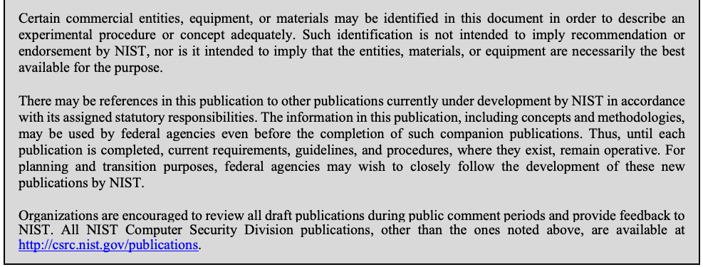
Comments on this publication may be submitted to:
本出版物へのコメントは以下に提出できる：
National Institute of Standards and Technology Attn: Computer Security Division, Information Technology Laboratory 100 Bureau Drive (Mail Stop 8930) Gaithersburg, MD 20899-8930 Email: sp800-204b-comments@nist.gov
National Institute of Standards and Technology Attn: Computer Security Division, Information Technology Laboratory 100 Bureau Drive (Mail Stop 8930) Gaithersburg, MD 20899-8930 Email: sp800-204b-comments@nist.gov
All comments are subject to release under the Freedom of Information Act (FOIA).
すべてのコメントは、情報自由法（FOIA）に基づく公開の対象となる。
Reports on Computer Systems Technology
コンピュータシステム技術に関する報告書
The Information Technology Laboratory (ITL) at the National Institute of Standards and Technology (NIST) promotes the U.S. economy and public welfare by providing technical leadership for the Nation’s measurement and standards infrastructure. ITL develops tests, test methods, reference data, proof of concept implementations, and technical analyses to advance the development and productive use of information technology. ITL’s responsibilities include the development of management, administrative, technical, and physical standards and guidelines for the cost-effective security and privacy of other than national security-related information in federal information systems.
米国国立標準技術研究所（NIST）の情報技術研究所（ITL）は、国の測定・標準インフラストラクチャに対する技術的リーダーシップを提供することにより、米国経済と公共の福祉を促進している。ITLは、情報技術の発展と生産的な利用を推進するため、テスト、テスト手法、参照データ、概念実証の実装、および技術分析を開発する。ITLの責務には、連邦情報システムにおける、国家安全保障に関連する情報以外の情報について、費用対効果の高いセキュリティとプライバシーを実現するための、管理上、事務管理上、技術上、および物理的な標準とガイドラインの策定が含まれる。
Abstract
要旨
原本PDFの抜粋画像
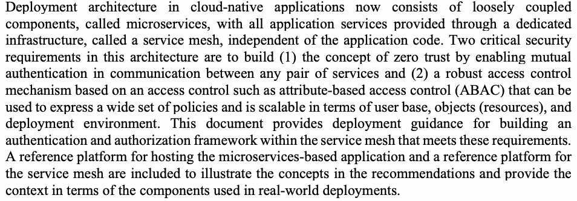
Deployment architecture in cloud-native applications now consists of loosely coupled components, called microservices, with all application services provided through a dedicated infrastructure, called a service mesh, independent of the application code. Two critical security requirements in this architecture are to build (1) the concept of zero trust by enabling mutual authentication in communication between any pair of services and (2) a robust access control mechanism based on an access control such as attribute-based access control (ABAC) that can be used to express a wide set of policies and is scalable in terms of user base, objects (resources), and deployment environment. This document provides deployment guidance for building an authentication and authorization framework within the service mesh that meets these requirements. A reference platform for hosting the microservices-based application and a reference platform for the service mesh are included to illustrate the concepts in the recommendations and provide the context in terms of the components used in real-world deployments.
クラウドネイティブアプリケーションの展開アーキテクチャは、現在、マイクロサービスと呼ばれる疎結合のコンポーネントで構成されており、アプリケーションのすべてのサービスは、アプリケーションコードから独立した、サービスメッシュと呼ばれる専用のインフラストラクチャを通じて提供される。このアーキテクチャにおける2つの重要なセキュリティ要件は、(1) 任意のサービスのペア間の通信における相互認証を可能にすることでゼロトラストの概念を組み込むこと、および (2) 幅広いポリシーを表現でき、ユーザー基盤、オブジェクト（リソース）、展開環境の点で拡張性のある、属性ベースアクセス制御（ABAC）などのアクセス制御に基づく堅牢なアクセス制御メカニズムを構築することである。本書は、これらの要件を満たす認証・認可フレームワークをサービスメッシュ内に構築するための展開ガイダンスを提供する。推奨事項の概念を説明し、実際の展開で使用されるコンポーネントの観点からの文脈を示すために、マイクロサービスベースのアプリケーションをホストするリファレンスプラットフォームと、サービスメッシュのリファレンスプラットフォームを含めている。
Keywords
キーワード
attribute-based access control; authentication policy; authorization policy; CI/CD; DevSecOps; JSON web token; microservices-based application; mutual TLS; next generation access control; policy enforcement point; role-based access control; service mesh; service proxy; zero trust.
属性ベースアクセス制御、認証ポリシー、認可ポリシー、CI/CD、DevSecOps、JSON Web Token、マイクロサービスベースのアプリケーション、相互TLS、次世代アクセス制御、ポリシー実施ポイント、ロールベースアクセス制御、サービスメッシュ、サービスプロキシ、ゼロトラスト。
Acknowledgments
謝辞
The authors express their sincere thanks to Mr. David Ferraiolo of NIST for initiating this effort to provide a targeted deployment guidance in the form of an authentication and authorization framework in a service mesh environment used for protecting microservices-based applications. They also express thanks to Isabel Van Wyk of NIST for her detailed editorial review.
著者らは、マイクロサービスベースのアプリケーションを保護するために使用されるサービスメッシュ環境における認証・認可フレームワークという形で、対象を絞った展開ガイダンスを提供する本取り組みを発案してくれたNISTのDavid Ferraiolo氏に、心から感謝する。また、詳細な編集上のレビューを行ってくれたNISTのIsabel Van Wyk氏にも感謝する。
Patent Disclosure Notice
特許開示に関する通知
NOTICE: The Information Technology Laboratory (ITL) has requested that holders of patent claims whose use may be required for compliance with the guidance or requirements of this publication disclose such patent claims to ITL. However, holders of patents are not obligated to respond to ITL calls for patents, and ITL has not undertaken a patent search in order to identify which, if any, patents may apply to this publication.
通知: 情報技術研究所（ITL）は、本刊行物のガイダンスまたは要件への準拠のために使用が必要となる可能性のある特許クレームの保有者に対し、当該特許クレームをITLに開示するよう求めている。ただし、特許保有者はITLの特許提出の呼びかけに応じる義務を負わず、ITLも、本刊行物に適用される特許があるか、あるとすればどれかを特定するための特許調査を行っていない。
As of the date of publication and following call(s) for the identification of patent claims whose use may be required for compliance with the guidance or requirements of this publication, no such patent claims have been identified to ITL.
本刊行物のガイダンスまたは要件への準拠のために使用が必要となる可能性のある特許クレームの申告を求める呼びかけを行った後、発行日の時点で、そのような特許クレームはITLに申告されていない。
No representation is made or implied by ITL that licenses are not required to avoid patent infringement in the use of this publication.
本刊行物の使用にあたり、特許侵害を避けるためにライセンスが不要であることについて、ITLは一切の表明を行わず、また示唆もしない。
Executive Summary
エグゼクティブサマリー
Two significant features of the application environment in emerging cloud-native applications are:
新たなクラウドネイティブアプリケーションのアプリケーション環境には、2つの重要な特徴がある。
1.Microservices: Applications have multiple, loosely coupled components called microservices that communicate with each other across the network.
1.マイクロサービス: アプリケーションは、ネットワーク越しに相互に通信する、マイクロサービスと呼ばれる疎結合の複数のコンポーネントを持つ。
2.Service Mesh: A dedicated infrastructure called the service mesh provides services for the application (e.g., authentication, authorization, routing, network resilience, security monitoring), which can be deployed independently of the application code.
2.サービスメッシュ: サービスメッシュと呼ばれる専用のインフラストラクチャが、アプリケーションのためのサービス（例: 認証、認可、ルーティング、ネットワークレジリエンス、セキュリティ監視）を提供する。これは、アプリケーションコードとは独立して展開できる。
原本PDFの抜粋画像
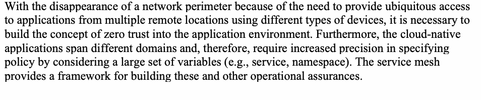
With the disappearance of a network perimeter because of the need to provide ubiquitous access to applications from multiple remote locations using different types of devices, it is necessary to build the concept of zero trust into the application environment. Furthermore, the cloud-native applications span different domains and, therefore, require increased precision in specifying policy by considering a large set of variables (e.g., service, namespace). The service mesh provides a framework for building these and other operational assurances.
さまざまな種類のデバイスを用いて複数のリモートの場所からアプリケーションに遍在的にアクセスできるようにする必要があるため、ネットワーク境界は消滅しつつあり、アプリケーション環境にゼロトラストの概念を組み込む必要がある。さらに、クラウドネイティブアプリケーションは異なるドメインにまたがるため、多数の変数（例: サービス、名前空間）を考慮して、ポリシーをより精密に指定する必要がある。サービスメッシュは、これらをはじめとする運用上の保証を構築するためのフレームワークを提供する。
The framework includes:
このフレームワークには、次のものが含まれる。
•An authenticatable runtime identity for services, authenticable credentials for individual users of the service, and encryption of communication between services.
•サービスのための認証可能な実行時アイデンティティ、サービスの個々のユーザーのための認証可能なクレデンシャル、およびサービス間通信の暗号化。
•A Policy Enforcement Point (PEP) that is separately deployable and controllable from the application. The role of Policy Decision Point (PDP) can be filled by the service mesh’s side-car proxies or an external service.
•アプリケーションとは別に展開し制御できるポリシー実施ポイント（PEP）。ポリシー決定ポイント（PDP）の役割は、サービスメッシュのサイドカープロキシまたは外部サービスが担うことができる。
•Logs and metrics for monitoring policy enforcement.
•ポリシー実施を監視するためのログとメトリクス。
The service mesh’s native feature to authenticate end-user credentials attached to the request (e.g., using a Java Web Token [JWT]) is augmented in many offerings to provide the ability to call external authentication and authorization systems on behalf of the application. The capability to deploy these authentication and authorization systems as services in the mesh also provides operational assurances for encryption in transit, identity, a PEP, authentication, and authorization for end-user identity.
リクエストに付随するエンドユーザーのクレデンシャル（例: Java Web Token [JWT] を使用）を認証するというサービスメッシュ固有の機能は、多くの製品で拡張されており、アプリケーションに代わって外部の認証・認可システムを呼び出す能力を提供している。これらの認証・認可システムをメッシュ内のサービスとして展開できる能力は、転送中の暗号化、アイデンティティ、PEP、およびエンドユーザーのアイデンティティに対する認証と認可についても、運用上の保証を提供する。
原本PDFの抜粋画像
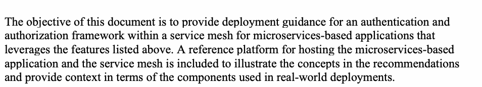
The objective of this document is to provide deployment guidance for an authentication and authorization framework within a service mesh for microservices-based applications that leverages the features listed above. A reference platform for hosting the microservices-based application and the service mesh is included to illustrate the concepts in the recommendations and provide context in terms of the components used in real-world deployments.
本書の目的は、上記の機能を活用する、マイクロサービスベースのアプリケーション向けのサービスメッシュ内の認証・認可フレームワークについて、展開ガイダンスを提供することである。推奨事項の概念を説明し、実際の展開で使用されるコンポーネントの観点からの文脈を示すために、マイクロサービスベースのアプリケーションとサービスメッシュをホストするリファレンスプラットフォームを含めている。
Table of Contents
目次
Executive Summary ..................................................................................................... iv
エグゼクティブサマリー ..................................................................................................... iv
1 Introduction — 1
1 はじめに — 1
1.1 Service Mesh Capabilities — 2
1.1 サービスメッシュの機能 — 2
1.2 Candidate Applications — 3
1.2 候補となるアプリケーション — 3
1.3 Scope and Approach — 3
1.3 スコープとアプローチ — 3
1.4 Target Audience — 3
1.4 想定読者 — 3
1.5 Relationship to Other NIST Guidance Documents — 4
1.5 他のNISTガイダンス文書との関係 — 4
1.6 Organization of This Document — 4
1.6 本文書の構成 — 4
2 Reference Platform for Microservices-based Application and Service Mesh — 5
2 マイクロサービスベースのアプリケーションおよびサービスメッシュのためのリファレンスプラットフォーム — 5
2.1 Reference Platform for Orchestration and Resource Management of a Microservices-based Application — 5
2.1 マイクロサービスベースのアプリケーションのオーケストレーションおよびリソース管理のためのリファレンスプラットフォーム — 5
2.1.1 Limitations of Reference Orchestration and Resource Management Platform for Security — 6
2.1.1 セキュリティに関するリファレンスオーケストレーションおよびリソース管理プラットフォームの制限事項 — 6
2.2 Service Mesh Reference Platform – Conceptual Architecture — 7
2.2 サービスメッシュリファレンスプラットフォーム – 概念アーキテクチャ — 7
2.2.1 Service Mesh Functions for Reference Orchestration and Resource Management Platform — 8
2.2.1 リファレンスオーケストレーションおよびリソース管理プラットフォームのためのサービスメッシュ機能 — 8
3 Attribute-based Access Control (ABAC) – Background — 9
3 属性ベースのアクセス制御（ABAC）– 背景 — 9
3.1 ABAC Deployment for Microservices-based Applications Using Service Mesh — 12
3.1 サービスメッシュを使用したマイクロサービスベースのアプリケーション向けABAC展開 — 12
4 Authentication and Authorization Policy Configuration in Service Mesh — 13
4 サービスメッシュにおける認証および認可ポリシー設定 — 13
4.1 Application Orchestration and Resource Management Platform Configuration — 13
4.1 アプリケーションオーケストレーションおよびリソース管理プラットフォームの設定 — 13
4.2 Service Mesh Configuration — 13
4.2 サービスメッシュの設定 — 13
4.3 Higher-level Security Configuration Parameters for Applications — 15
4.3 アプリケーション向けの高レベルセキュリティ設定パラメータ — 15
4.4 Authentication Policies — 15
4.4 認証ポリシー — 15
4.4.1 Specifying Authentication Policies — 16
4.4.1 認証ポリシーの指定 — 16
4.4.2 Service-level Authentication — 16
4.4.2 サービスレベルの認証 — 16
4.4.3 End User Authentication — 17
4.4.3 エンドユーザー認証 — 17
4.5 Authorization Policies — 18
4.5 認可ポリシー — 18
4.5.1 Service-level Authorization Policies — 18
4.5.1 サービスレベルの認可ポリシー — 18
4.5.2 End-user Level Authorization Policies — 19
4.5.2 エンドユーザーレベルの認可ポリシー — 19
4.5.3 Model-based Authorization Policies — 21
4.5.3 モデルベースの認可ポリシー — 21
4.6 Authorization Policy Elements — 22
4.6 認可ポリシーの要素 — 22
4.6.1 Policy Types — 22
4.6.1 ポリシータイプ — 22
4.6.2 Policy Target or Authorization Scope — 22
4.6.2 ポリシー対象または認可スコープ — 22
4.6.3 Policy Sources — 23
4.6.3 ポリシーソース — 23
4.6.4 Policy Operations — 23
4.6.4 ポリシー操作 — 23
4.6.5 Policy Conditions — 23
4.6.5 ポリシー条件 — 23
4.6.6 Default Authorization Policy — 24
4.6.6 デフォルトの認可ポリシー — 24
5 ABAC Deployment for Service Mesh — 25
5 サービスメッシュ向けABAC展開 — 25
5.1 Reference Monitor Concept in Authorization Framework — 25
5.1 認可フレームワークにおける参照モニターの概念 — 25
5.2 Supporting Infrastructure for ABAC Authorization Framework — 25
5.2 ABAC認可フレームワークを支えるインフラストラクチャ — 25
5.2.1 Service-to-Service Request (SVC-SVC) – Supporting Infrastructure — 25
5.2.1 サービス間リクエスト（SVC-SVC）– サポートインフラストラクチャ — 25
5.2.2 End User + Service-to-Service Request (EU+SVC-SVC) – Supporting Infrastructure — 26
5.2.2 エンドユーザー＋サービス間リクエスト（EU+SVC-SVC）– サポートインフラストラクチャ — 26
5.3 Advantages of ABAC Authorization Framework for Service Mesh — 26
5.3 サービスメッシュ向けABAC認可フレームワークの利点 — 26
5.4 Enforcement Alternatives in Proxies — 27
5.4 プロキシにおける強制の選択肢 — 27
6 Summary and Conclusions — 28
6 要約および結論 — 28
References — 29
参考文献 — 29
Appendix A: List of Recommendations for deployment of an ABAC-based authentication and authorization framework for microservices-based applications using a service mesh — 31
付録A：サービスメッシュを使用するマイクロサービスベースのアプリケーション向けの、ABACベースの認証および認可フレームワークのデプロイメントに関する推奨事項リスト — 31
1 Introduction
1 はじめに
A microservices-based architecture in applications and service mesh application infrastructure that provides various security services through service proxies has emerged as the widespread application environment for cloud-native applications. With the disappearance of the network perimeter due to the need for ubiquitous access to these applications from multiple remote locations using different types of devices, it is necessary to build the concept of zero trust [1] into this application environment. Zero trust assumes that there is no implicit trust granted to assets or user accounts based solely on their physical or network location (i.e., local area networks versus the internet) or based on asset ownership (enterprise or personally owned) [1]. Zero trust focuses on protecting resources (e.g., assets, services, workflows, and network accounts) rather than network segments since the network location is no longer seen as the prime component to the security posture of the resource. Furthermore, the loosely coupled nature of the components (i.e., microservices) of these cloud-native applications facilitates independent design, development, and agile deployment (e.g., Continuous Integration/ Continuous Delivery or Deployment (CI/CD) [2]) of the constituent microservices, enabling paradigms such as DevSecOps [3] (representing Development, Security and Operations) to be used.
アプリケーションにおけるマイクロサービスベースのアーキテクチャ、およびサービスプロキシを通じてさまざまなセキュリティサービスを提供するサービスメッシュアプリケーションインフラストラクチャは、クラウドネイティブアプリケーション向けの普及したアプリケーション環境として台頭してきた。多様な種類のデバイスを使用して複数の遠隔地からこれらのアプリケーションへユビキタスにアクセスする必要性からネットワーク境界が消失したことに伴い、このアプリケーション環境にゼロトラスト [1] の概念を組み込むことが必要となっている。ゼロトラストでは、物理的またはネットワーク上の場所（すなわち、ローカルエリアネットワーク対インターネット）のみに基づいたり、資産の所有形態（企業所有または個人所有） [1] に基づいたりして、資産やユーザーアカウントに暗黙の信頼が付与されることはないと想定している。ネットワーク上の場所はもはやリソースのセキュリティ体制における主要な要素とは見なされないため、ゼロトラストはネットワークセグメントではなくリソース（例：資産、サービス、ワークフロー、ネットワークアカウントなど）の保護に重点を置いている。さらに、これらクラウドネイティブアプリケーションの構成要素（すなわち、マイクロサービス）の疎結合な性質により、構成マイクロサービスの独立した設計、開発、およびアジャイルな展開（例：継続的インテグレーション／継続的デリバリーまたは展開（CI/CD） [2]）が容易になり、DevSecOps [3]（開発、セキュリティ、運用を表す）などのパラダイムの利用が可能になる。
The security requirements for microservices-based applications are discussed extensively in [4] and summarized here to provide context for this discussion. They are:
マイクロサービスベースのアプリケーションに対するセキュリティ要件は [4] で詳細に論じられており、本議論の背景を示すためにここに要約する。それらは以下のとおりである。
原本PDFの抜粋画像
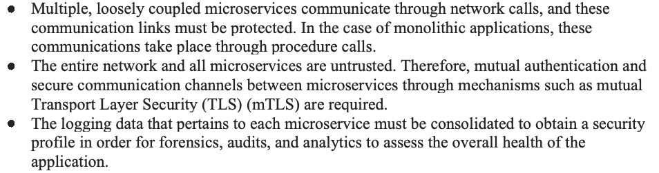
Operating in multiple security domains and multiple clouds, cloud-native applications require a secure authentication and authorization framework. When implemented within the service mesh, the critical requirements of this framework are:
複数のセキュリティドメインおよび複数のクラウドで動作するクラウドネイティブアプリケーションには、セキュアな認証および認可フレームワークが必要である。サービスメッシュ内に実装される場合、このフレームワークの重要な要件は以下のとおりである。
•The code that is part of this framework should be verifiable and non-bypassable (always invoked), thus satisfying the requirements of a security kernel.
•このフレームワークの一部であるコードは、検証可能かつバイパス不能（常に呼び出される）であるべきであり、それによってセキュリティカーネルの要件を満たす。
•The framework should provide authentication and authorization services at both the service level and end-user level.
•フレームワークは、サービスレベルとエンドユーザーレベルの双方で認証および認可サービスを提供するべきである。
•The framework should be able to support a diverse set of authorization policies.
•フレームワークは、多様な認可ポリシーのセットをサポートできるべきである。
The operational assurances are required for meeting the above requirements, and others are provided by the service mesh. The specific features in the service mesh that enable these are given in the next section.
上記の要件およびその他の要件を満たすために必要な運用上の保証は、サービスメッシュによって提供される。これらを可能にするサービスメッシュの具体的な機能は、次のセクションで示す。
1
1.1 Service Mesh Capabilities
1.1 サービスメッシュの機能
A service mesh provides a framework for building a set of operational assurances for an application through its various features and the set of controls they enable. That framework includes an authenticatable runtime identity for services, the ability to authenticate credentials of individual users of a service, encryption of communication in transit between services, a Policy Enforcement Point (PEP) separately deployable and controllable from the application (e.g., service mesh’s side-car proxy), and logs and metrics for monitoring policy enforcement. Using these mesh features, a set of controls can be built for all applications that are part of the mesh (e.g., all traffic is encrypted, all traffic to an application goes through the side-car proxy [PEP]).
サービスメッシュは、そのさまざまな機能およびそれらが可能にする一連の制御を通じて、アプリケーションに対する一連の運用上の保証を構築するためのフレームワークを提供する。そのフレームワークには、サービスの認証可能なランタイムアイデンティティ、サービスの個々のユーザーのクレデンシャルを認証する能力、サービス間の転送中の通信の暗号化、アプリケーションとは別にデプロイおよび制御できるポリシー適用ポイント（PEP）（例：サービスメッシュのサイドカープロキシ）、ならびにポリシー適用を監視するためのログおよびメトリクスが含まれる。これらのメッシュ機能を使用することで、メッシュの一部であるすべてのアプリケーションに対して一連の制御を構築できる（例：すべてのトラフィックが暗号化される、アプリケーションへのすべてのトラフィックがサイドカープロキシ［PEP］を経由する）。
A significant advantage of the service mesh architecture is that the key piece that allows for these controls to be built – the sidecar proxy deployed next to every application – has more security benefits than the traditional approach of building these operational assurances into the application code. First, the life cycle of the sidecar is independent of the application, making it easier to manage across a fleet (e.g., push updates, ensure a consistent version is deployed everywhere). Second, modern implementations (e.g., Istio) allow for dynamic configuration. It is easy to update policies, and updates take effect nearly immediately and without having to redeploy applications. Finally, the mesh’s centralized control allows security teams to build policies that apply to the entire organization so that application developers who build business value are secure by default.
サービスメッシュアーキテクチャの大きな利点は、これらの制御の構築を可能にする重要な要素、すなわちすべてのアプリケーションの隣にデプロイされるサイドカープロキシが、これらの運用上の保証をアプリケーションコードに組み込む従来のアプローチよりも多くのセキュリティ上の利点を持つことである。第一に、サイドカーのライフサイクルはアプリケーションから独立しているため、フリート全体にわたる管理が容易になる（例：更新のプッシュ、あらゆる場所に一貫したバージョンがデプロイされていることの確保）。第二に、最新の実装（例：Istio）では動的な構成が可能である。ポリシーの更新は容易であり、更新はアプリケーションを再デプロイすることなく、ほぼ即座に有効になる。最後に、メッシュの集中制御により、セキュリティチームは組織全体に適用されるポリシーを構築でき、その結果、ビジネス価値を構築するアプリケーション開発者はデフォルトでセキュアになる。
A service mesh provides the ability to authenticate end user credentials attached to the request, like a JSON (JavaScript Object Notation) Web Token (JWT). Many service meshes (e.g., Istio) go further and provide the ability for the mesh’s side-car to call external authentication and authorization systems on behalf of the application. This grants the ability to move request-level policy enforcement out of the application code, trusting instead on the mesh’s assurance that requests that reach the service have been authenticated and authorized for the action that the request is attempting. The mesh can even be configured to pass proof of this to the application. This, coupled with the service mesh’s centralized control, means it is possible for a central team to mandate and manage application-level security across the entire organization, delegating to individual application teams only to specify what permissions are required for each application’s actions.
サービスメッシュは、JSON（JavaScript Object Notation）Web Token（JWT）のような、リクエストに付加されたエンドユーザーのクレデンシャルを認証する能力を提供する。多くのサービスメッシュ（例：Istio）はさらに踏み込んで、メッシュのサイドカーがアプリケーションに代わって外部の認証および認可システムを呼び出す能力を提供する。これにより、リクエストレベルのポリシー適用をアプリケーションコードの外に移し、代わりに、サービスに到達するリクエストは、そのリクエストが試みているアクションについて認証および認可済みであるというメッシュの保証を信頼できるようになる。メッシュは、その証明をアプリケーションに渡すように構成することさえできる。これがサービスメッシュの集中制御と組み合わさることで、中央のチームが組織全体にわたってアプリケーションレベルのセキュリティを義務付けて管理し、個々のアプリケーションチームには、各アプリケーションのアクションにどの権限が必要かを指定することだけを委ねることが可能になる。
Using the service mesh architecture also means that authentication and authorization systems can be deployed as services in the mesh. Like any other service in the mesh, they benefit from the operational assurances the mesh provides: encryption in transit, identity, a PEP, authentication, and authorization for end user identity. This makes it cheaper to operate an organization’s authentication and authorization systems securely and reliably.
サービスメッシュアーキテクチャを使用することは、認証および認可システムをメッシュ内のサービスとしてデプロイできることも意味する。メッシュ内の他のサービスと同様に、これらのシステムはメッシュが提供する運用上の保証、すなわち転送中の暗号化、アイデンティティ、PEP、ならびにエンドユーザーアイデンティティに対する認証および認可の恩恵を受ける。これにより、組織の認証および認可システムをセキュアかつ高い信頼性で運用するコストが下がる。
In addition to the service mesh features, the capabilities of the access control model play an important role in the authentication and authorization framework. Attribute-based access control (ABAC) has emerged as a promising approach for supporting multiple authorization policies (third requirement above). As per [5], ABAC is defined as “an access control method where subject requests to perform operations on objects are granted or denied based on assigned attributes of the subject, assigned attributes of the object, (optionally) environmental conditions, and a set of policies that are specified in terms of those attributes and conditions.” The main focus of this document is to provide guidance on an authentication and authorization framework, the latter using ABAC to secure microservices-based applications using service mesh.
サービスメッシュの機能に加えて、アクセス制御モデルの能力も認証および認可フレームワークにおいて重要な役割を果たす。属性ベースアクセス制御（ABAC）は、複数の認可ポリシーをサポートする（上記の3番目の要件）ための有望なアプローチとして登場してきた。[5] によれば、ABACは「オブジェクトに対する操作を実行するためのサブジェクトの要求が、サブジェクトに割り当てられた属性、オブジェクトに割り当てられた属性、（オプションで）環境条件、ならびにそれらの属性および条件によって規定される一連のポリシーに基づいて許可または拒否されるアクセス制御方式」と定義される。本文書の主眼は、認証および認可フレームワークに関するガイダンスを提供することであり、後者はABACを使用して、サービスメッシュを使用するマイクロサービスベースのアプリケーションをセキュアにする。
1.2 Candidate Applications
1.2 候補となるアプリケーション
The service mesh is most widely used today with containerized applications but can be extended into other environments, such as stateful applications.
サービスメッシュは、今日ではコンテナ化されたアプリケーションで最も広く使用されているが、ステートフルアプリケーションなどの他の環境にも拡張できる。
1.3 Scope and Approach
1.3 範囲とアプローチ
This document focuses on providing guidance for building a secure authentication and authorization framework using components of a service mesh for securing services in microservice-based applications. The framework was developed by highlighting the set of features provided by the service mesh, illustrating how those features can be used to provide operational assurances for applications in the mesh, and making a set of recommendations for settings/defaults for those features that provide the best security posture for applications running on that mesh. The example of running the access control system – one of the most important systems in the organization – on the mesh leveraging those operational assurances makes the system more secure and cheaper to operate than it might be otherwise.
本書は、マイクロサービスベースのアプリケーションにおけるサービスを保護するために、サービスメッシュのコンポーネントを使用して安全な認証・認可フレームワークを構築するためのガイダンスを提供することに焦点を当てている。このフレームワークは、サービスメッシュが提供する一連の機能を取り上げ、それらの機能を使用してメッシュ内のアプリケーションに運用上の保証を提供する方法を例示し、そのメッシュ上で稼働するアプリケーションに最良のセキュリティ態勢をもたらす、それらの機能の設定／デフォルトに関する一連の推奨事項を示すことによって策定された。組織において最も重要なシステムの1つであるアクセス制御システムを、これらの運用上の保証を活用してメッシュ上で稼働させるという例では、そうしない場合に比べて、当該システムはより安全になり、運用コストもより低くなる。
A reference application orchestration and resource management platform and a reference service mesh platform have been used as examples to illustrate these recommendations in the context of real-world application artifacts (e.g., containers and virtual machines (VMs)). The chosen reference application orchestration and resource management platform is the open-source Kubernetes (although other application platforms can be chosen for reference), and the chosen reference service mesh platform is Istio. Application infrastructure components in the service mesh that provide other services like network routing, network resilience, and monitoring are outside of the scope of this document.
現実世界のアプリケーションアーティファクト（例：コンテナや仮想マシン（VM））の文脈でこれらの推奨事項を例示するために、参照アプリケーションオーケストレーションおよびリソース管理プラットフォームと、参照サービスメッシュプラットフォームを例として使用している。選択した参照アプリケーションオーケストレーションおよびリソース管理プラットフォームはオープンソースのKubernetesであり（ただし、参照用として他のアプリケーションプラットフォームを選択することもできる）、選択した参照サービスメッシュプラットフォームはIstioである。ネットワークルーティング、ネットワークレジリエンス、監視などの他のサービスを提供する、サービスメッシュ内のアプリケーションインフラストラクチャコンポーネントは、本書の対象範囲外である。
1.4 Target Audience
1.4 対象読者
The target audience of this guidance document for developing an authentication and authorization framework for microservices-based applications using the service mesh includes:
サービスメッシュを使用したマイクロサービスベースのアプリケーション向けの認証・認可フレームワークを開発するための本ガイダンス文書の対象読者には、以下が含まれる。
•Security solutions architects who want to protect the application workloads in microservices-based applications
•マイクロサービスベースのアプリケーションにおいてアプリケーションワークロードを保護したいセキュリティソリューションアーキテクト
•Platform architects who want to incorporate a service mesh into the platform offered by their organization to its developers
•組織が開発者に提供するプラットフォームにサービスメッシュを組み込みたいプラットフォームアーキテクト
•Developers who want to develop authentication and authorization plug-ins in this application environment
•このアプリケーション環境で認証および認可プラグインを開発することを望む開発者
3
1.5 Relationship to Other NIST Guidance Documents
1.5 他のNISTガイダンス文書との関係
This guidance focuses on building an authentication and authorization framework within the service mesh used for securing microservices-based applications. The following publications provide background information for the contents of this document:
本ガイダンスは、マイクロサービスベースのアプリケーションの保護に使用されるサービスメッシュ内での認証および認可フレームワークの構築に焦点を当てている。以下の出版物は、本書の内容に関する背景情報を提供する。
•Special Publication (SP) 800-204, Security Strategies for Microservices-based Application Systems [4], discusses the characteristics of microservices-based applications and the overall security requirements and strategies for addressing those requirements.
•Special Publication（SP）800-204『Security Strategies for Microservices-based Application Systems』[4]は、マイクロサービスベースのアプリケーションの特性、ならびに全体的なセキュリティ要件およびそれらの要件に対処するための戦略について論じている。
•Special Publication (SP) 800-204A, Building Secure Microservices-based Applications Using Service-Mesh Architecture [6], provides deployment guidance for various security services (e.g., authentication and authorization, and security monitoring) for a microservices-based application using a dedicated infrastructure (i.e., a service mesh).
•Special Publication（SP）800-204A『Building Secure Microservices-based Applications Using Service-Mesh Architecture』[6]は、専用のインフラストラクチャ（すなわちサービスメッシュ）を使用したマイクロサービスベースのアプリケーションに対する各種セキュリティサービス（例えば、認証および認可、ならびにセキュリティ監視）の展開ガイダンスを提供する。
•Special Publication (SP) 800-162, Guide to Attribute Based Access Control (ABAC) Definitions and Considerations [17], provides a definition of attribute based access control (ABAC) as a logical access control methodology where authorization to perform a set of operations is determined by evaluating attributes associated with the subject, object, requested operations, and, in some cases, environment conditions against policy, rules, or relationships that describe the allowable operations for a given set of attributes.
•Special Publication（SP）800-162『Guide to Attribute Based Access Control (ABAC) Definitions and Considerations』[17]は、属性ベースのアクセス制御（ABAC）を次のような論理アクセス制御方式として定義している。すなわち、サブジェクト、オブジェクト、要求された操作、および場合によっては環境条件に関連付けられた属性を、所定の属性セットに対して許容される操作を記述するポリシー、ルール、または関係に照らして評価することにより、一連の操作を実行するための認可が決定される方式である。
1.6 Organization of This Document
1.6 本書の構成
The organization of this document is as follows:
本書の構成は以下の通りである。
•Section 2 provides an overview of a microservices-based application, its security requirements, a brief description of the overall architecture of reference platform for orchestration and resource management of microservices-based applications and the reference service mesh platform. The latter two are used as examples to illustrate the building blocks involved in the deployment recommendations.
•第2節では、マイクロサービスベースのアプリケーションとそのセキュリティ要件の概要、ならびにマイクロサービスベースのアプリケーションのオーケストレーションおよびリソース管理のための参照プラットフォームと参照サービスメッシュプラットフォームの全体的なアーキテクチャの簡潔な説明を示す。後者の2つは、展開に関する推奨事項に関わる構成要素を説明するための例として使用される。
•Section 3 outlines the advantages of ABAC for the application environment and describes the functional architecture for two of the standard ABAC representations.
•第3節では、アプリケーション環境におけるABACの利点を概説し、標準的なABAC表現のうち2つの機能アーキテクチャについて説明する。
•Section 4 discusses the building blocks of the authentication and authorization framework, the requirements and recommendations for configuration of policies that are required in the reference orchestration and resource management platform and in the reference service mesh platform for implementing the framework. The recommendations span mechanisms for supporting both end user and service level authentication and authorization policies. The minimal set of policy elements needed in authorization policies are also outlined.
•第4節では、認証および認可フレームワークの構成要素、ならびに当該フレームワークを実装するために参照オーケストレーションおよびリソース管理プラットフォーム、および参照サービスメッシュプラットフォームにおいて必要とされるポリシー構成の要件および推奨事項について論じる。推奨事項は、エンドユーザーレベルおよびサービスレベルの双方の認証および認可ポリシーをサポートするためのメカニズムに及ぶ。認可ポリシーで必要とされるポリシー要素の最小限のセットについても概説する。
•Section 5 discusses some architectural features of the framework such as functionality of a reference monitor, supporting infrastructure, advantages as an ABAC implementation, and enforcement alternatives.
•第5節では、リファレンスモニターの機能、サポートインフラストラクチャ、ABAC実装としての利点、施行の選択肢など、フレームワークのいくつかのアーキテクチャ上の特徴について論じる。
•Section 6 provides summary and conclusions.
•第6節では、要約および結論を提供する。
4
2 Reference Platform for Microservices-based Application and Service Mesh
2 マイクロサービスベースのアプリケーションとサービスメッシュのためのリファレンスプラットフォーム
原本PDFの抜粋画像
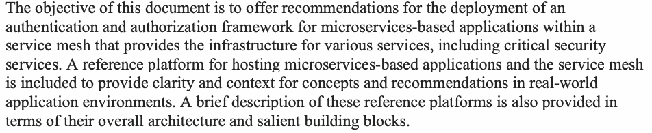
2.1 Reference Platform for Orchestration and Resource Management of a Microservices-based Application
2.1 マイクロサービスベースのアプリケーションのオーケストレーションとリソース管理のためのリファレンスプラットフォーム
原本PDFの抜粋画像
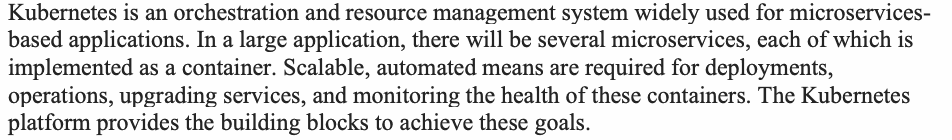
原本PDFの抜粋画像
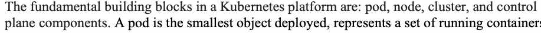
The fundamental building blocks in a Kubernetes platform are: pod, node, cluster, and control plane components. A pod is the smallest object deployed, represents a set of running containers, and is identified by a label that is a name/value pair. A node is a physical or virtual machine that houses a set of pods as well as the interfaces necessary to run the housed pods. The set of nodes is called a cluster.
Kubernetesプラットフォームの基本的な構成要素は、ポッド、ノード、クラスター、およびコントロールプレーンコンポーネントである。ポッドは、展開される最小のオブジェクトであり、稼働中のコンテナの集合を表し、名前と値のペアであるラベルによって識別される。ノードは、ポッドの集合と、収容するポッドを実行するために必要なインターフェースを収容する、物理マシンまたは仮想マシンである。ノードの集合はクラスターと呼ばれる。
| The control plane's components make global decisions about the cluster (for example, | ||
| scheduling), as well as detecting and responding to cluster events (for example, starting up | ||
| new pod | when workload increases). | Some key control plane components include: Kubernetes |
| API (application programming interface) server, a key/value store, a scheduler, and a set of | ||
| controllers. |
原本PDFの抜粋画像
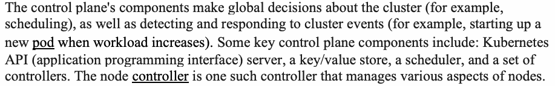
| コントロールプレーンのコンポーネントは、クラスタに関するグローバルな決定（例えば、 | ||
| スケジューリング）を行うとともに、クラスタイベントの検出と応答（例えば、ワークロードが増加した際の | ||
| 新しいポッド | の起動）を行う。 | いくつかの主要なコントロールプレーンコンポーネントには、Kubernetes |
| API（application programming interface）サーバー、キー/値ストア、スケジューラ、および一連の | ||
| コントローラが含まれる。 |
| To ensure adequate performance and continued availability, it is imperative to have some cluster-level mechanisms for the clusters that are configured using the hosts of the application | |
| components (i.e., microservices). Considering a scenario where the host is a node of a | |
| Kubernetes platform cluster and the application components are running inside of a container | |
| with a pod (i.e., a group of containers) as a deployment artifact, the following cluster-level | |
| mechanisms are required. | |
| For example, one of the most well-known features of Kubernetes is pod-level horizontal scaling. | |
| This means that when services receive more traffic, more instances will be generated across | |
| machines that grow or shrink on demand. Kubernetes supports auto-vertical scaling on the pod | |
| level. Thus, a cluster could be configured to scale the machine on which a pod runs up or down | |
| to more accurately fit the anticipated power needs of any microservice. For example, if certain subsets of nodes saw spikes in traffic at key times, with the right usage analysis, one could potentially reschedule those jobs across machines in order to save costs and optimize performance [7]. |
原本PDFの抜粋画像
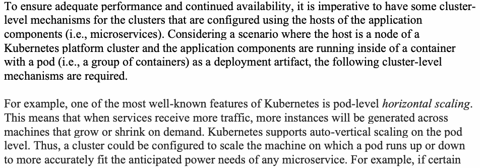
| 適切なパフォーマンスと継続的な可用性を確保するには、アプリケーションコンポーネント（すなわちマイクロサービス）のホストを使用して構成されるクラスタに対して、いくつかのクラスタレベルのメカニズムを備えることが不可欠である。 | |
| ホストがKubernetesプラットフォームクラスタのノードであり、 | |
| アプリケーションコンポーネントが、デプロイメント成果物としてのポッド（すなわちコンテナのグループ）を伴うコンテナの | |
| 内部で実行されているシナリオを考えると、以下のクラスタレベルの | |
| メカニズムが必要とされる。 | |
| 例えば、Kubernetesの最もよく知られた機能の1つはポッドレベルの水平スケーリングである。 | |
| これは、サービスがより多くのトラフィックを受信した際に、オンデマンドで増減するマシン群にわたって | |
| より多くのインスタンスが生成されることを意味する。Kubernetesはポッドレベルでの自動垂直スケーリングをサポートしている。 | |
| したがって、クラスタは、ポッドが稼働するマシンをスケールアップまたはスケールダウンして、 | |
| 任意のマイクロサービスの予想される処理能力のニーズにより正確に適合させるように構成できる。例えば、特定のノードのサブセットで重要な時間帯にトラフィックのスパイクが見られた場合、適切な使用状況分析を行うことで、コストを節約しパフォーマンスを最適化するために、それらのジョブをマシン間で再スケジューリングできる可能性がある [7]。 |
| Similarly, Kubernetes offers features to monitor the health of the microservices (e.g., check the | |
| status and readiness). The data to perform these functions | is configured in declarative |
| deployment documents, known as Yet Another Markup Language (YAML), that describe the | |
| ports that a pod’s containers are listening on. One can specify what to do when services do no | t |
| start, do not perform as normal, or exit unexpectedly. |
原本PDFの抜粋画像
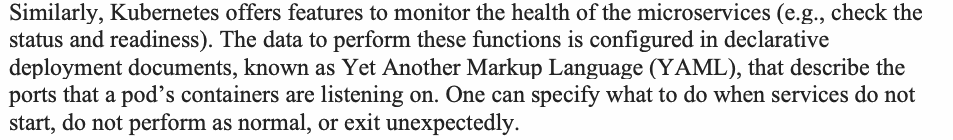
| 同様に、Kubernetesはマイクロサービスの健全性を監視するための機能（例えば、ステータスや準備状態のチェック） | |
| を提供する。これらの機能を実行するためのデータは、 | ポッドのコンテナがリッスンしているポートを記述する、 |
| Yet Another Markup Language（YAML）として知られる宣言型のデプロイメント文書の中で設定される。 | |
| サービスが起動しない場合、正常に動作しない場合、または予期せず終了した場合に | 何を行うかを |
| 指定することができる。 |
2.1.1 Limitations of Reference Orchestration and Resource Management Platform for
2.1.1 参照オーケストレーションおよびリソース管理プラットフォームの制限事項：
Security
セキュリティ
原本PDFの抜粋画像
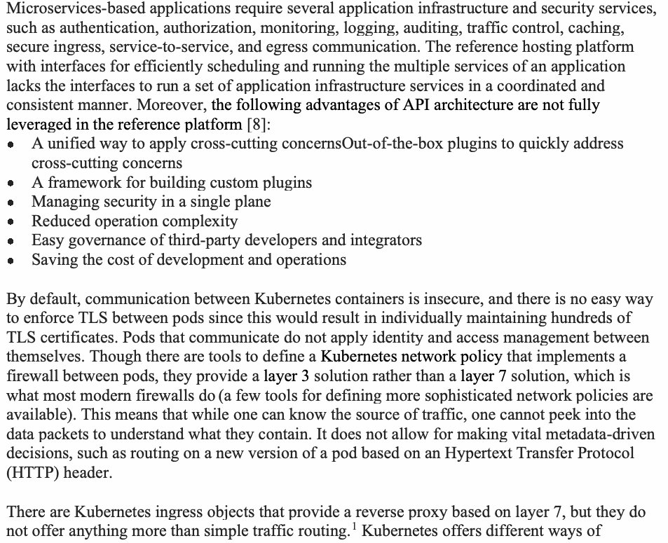
2.2 Service Mesh Reference Platform – Conceptual Architecture
2.2 サービスメッシュのリファレンスプラットフォーム – 概念アーキテクチャ
原本PDFの抜粋画像
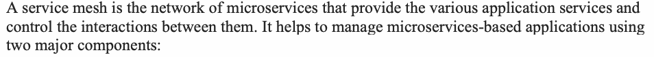
1.Data Plane. This is the component that performs the actual routing or communication of messages between microservices. It also gathers telemetry data, which helps to monitor the health and state of the services. The traffic that flows through the data plane is the application-related (business) data.
1.データプレーン。これは、マイクロサービス間でメッセージの実際のルーティングまたは通信を行うコンポーネントである。また、サービスの健全性と状態の監視に役立つテレメトリデータも収集する。データプレーンを流れるトラフィックは、アプリケーションに関連する（業務の）データである。
| 2. Control Plane. This is the component that provides an API to define policies. This API is | |
| often independent of the platform on which the microservices application runs. The control | |
| plane also helps the administrator populate the data plane component with a configuration | |
| that determines how to route traffic. The control plane is the brain of a service mesh. The | |
| traffic that flows through the control plane consists of messages of interaction between | |
| service mesh components. | |
| The control plane may consist of multiple modules, and the distribution of functionality among | |
| these modules may be different in various service mesh offerings. However, they all provide the | |
| following core functions: | |
| a. A module that parses the policy rules defined in the control plane and converts them into | |
| configuration parameters in the data plane module (i.e., the sidecar proxy). These policies | |
| may pertain to various functions, such as authentication, authorization, | service discovery, |
| traffic management (including load balancing), intelligent routing, blue-green deployments, |
| and canary rollouts. It may also include configuration parameters related to resiliency in the | |
| service mesh, such as timeout, retry, and circuit-breaking capabilities. | |
| b. | A module that provides all of the infrastructure functionality for authentication, |
| authorization, and establishing a secure, encrypted session while two microservices | |
| communicate. These functions include user authentication, credential management, digital | |
| certificate management, and traffic encryption. |
原本PDFの抜粋画像
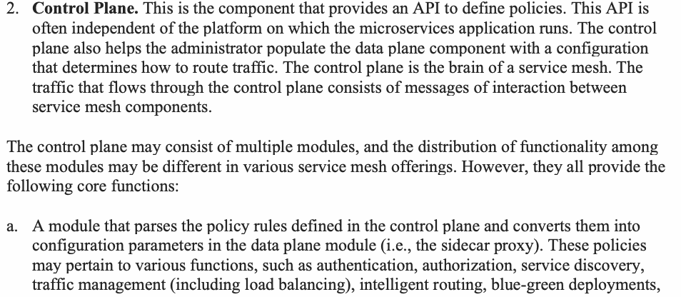
| 2. コントロールプレーン。これは、ポリシーを定義するためのAPIを提供するコンポーネントである。このAPIは、 | |
| 多くの場合、マイクロサービスアプリケーションが実行されているプラットフォームから独立している。コントロール | |
| プレーンは、管理者がトラフィックのルーティング方法を決定する設定を | |
| データプレーンコンポーネントに投入するのにも役立つ。コントロールプレーンはサービスメッシュの頭脳である。 | |
| コントロールプレーンを流れるトラフィックは、サービスメッシュコンポーネント間の | |
| 対話メッセージで構成される。 | |
| コントロールプレーンは複数のモジュールで構成される場合があり、これらのモジュール間での機能の分散は | |
| さまざまなサービスメッシュ製品で異なる場合がある。ただし、それらはすべて | |
| 以下のコア機能を提供する。 | |
| a. コントロールプレーンで定義されたポリシールールを解析し、それらを | |
| データプレーンモジュール（すなわちサイドカープロキシ）の設定パラメータに変換するモジュール。これらのポリシーは、 | |
| 認証、認可、 | サービスディスカバリ、 |
| トラフィック管理（負荷分散を含む）、インテリジェントルーティング、ブルーグリーンデプロイ、 |
| およびカナリアロールアウトなどのさまざまな機能に関連する場合がある。また、タイムアウト、再試行、サーキットブレーカー機能など、サービスメッシュの復元力に関連する設定パラメータも | |
| 含まれる場合がある。 | |
| b. | 2つのマイクロサービスが通信する際に、認証、 |
| 認可、およびセキュアで暗号化されたセッションの確立のためのすべてのインフラストラクチャ機能を提供する | |
| モジュール。これらの機能には、ユーザー認証、クレデンシャル管理、デジタル | |
| 証明書管理、およびトラフィックの暗号化が含まれる。 |
2.2.1 Service Mesh Functions for Reference Orchestration and Resource Management Platform
2.2.1 参照オーケストレーションおよびリソース管理プラットフォームのためのサービスメッシュ機能
In order to describe the generic service mesh functions in the context of the reference platform – which, in this case, is Kubernetes – the deployment details of both the microservices application and service mesh components in that platform must be considered. Since authentication and authorization functions are the focus of this document, discussions for those functions on the Kubernetes platform will be confined to the functions in the service mesh.
参照プラットフォーム（この場合はKubernetes）の文脈において汎用的なサービスメッシュ機能を説明するためには、そのプラットフォームにおけるマイクロサービスアプリケーションとサービスメッシュコンポーネント双方のデプロイ詳細を考慮する必要がある。認証および認可機能が本ドキュメントの焦点であるため、Kubernetesプラットフォームにおけるそれらの機能に関する議論は、サービスメッシュ内の機能に限定される。
原本PDFの抜粋画像
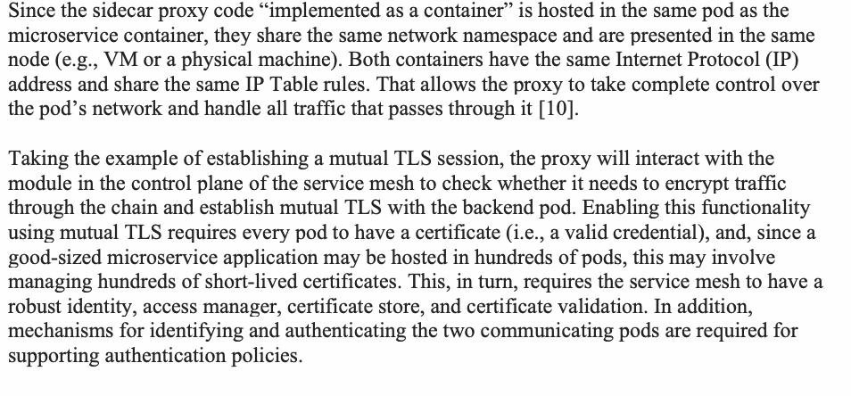
A service mesh not only provides various application services during runtime but also supports the DevSecOps development and maintenance paradigm. The development team can concentrate their efforts on efficient development paradigms, such as application architecture (code modularity and structuring) and secure deployment (including interaction with sidecars and data flows through PEPs), without worrying about the implementation (development and deployment) of all infrastructure services, including many aspects of security. The service mesh is reference platform-aware and thus automatically injects sidecar containers into the pods. Once the service mesh inserts the sidecar containers, the combined team of developers, operations, and security teams can define policies, deploy them, and monitor their enforcements during runtime. These teams can also configure monitoring of the microservices applications without interfering with the functioning of the applications.
サービスメッシュは、ランタイム中にさまざまなアプリケーションサービスを提供するだけでなく、DevSecOpsの開発および保守パラダイムもサポートする。開発チームは、セキュリティの多くの側面を含むすべてのインフラストラクチャサービスの実装（開発およびデプロイ）について心配することなく、アプリケーションアーキテクチャ（コードのモジュール化と構造化）やセキュアなデプロイ（サイドカーとの相互作用やPEP経由のデータフローを含む）など、効率的な開発パラダイムに注力できる。サービスメッシュは参照プラットフォームを認識しているため、Podにサイドカーコンテナを自動的に注入する。サービスメッシュがサイドカーコンテナを挿入すると、開発者、運用、セキュリティチームからなる統合チームは、ポリシーを定義し、それらをデプロイし、ランタイム中にその適用状況を監視できる。これらのチームは、アプリケーションの機能を妨げることなく、マイクロサービスアプリケーションの監視を設定することもできる。
8
3 Attribute-based Access Control (ABAC) – Background
3 属性ベースアクセス制御（ABAC）– 背景
Attribute-based access control (ABAC) is an authorization framework or engine that computes decisions for user access requests based on attributes (properties) of users (subjects), application objects (resources), and the environment and policies expressed in terms of the attributes [5]. The advantages of ABAC for microservices-based applications using service mesh include:
属性ベースアクセス制御（ABAC）は、ユーザー（サブジェクト）、アプリケーションオブジェクト（リソース）、環境の属性（プロパティ）、およびそれらの属性の観点で表現されたポリシーに基づいて、ユーザーのアクセス要求に対する決定を算出する認可フレームワークまたはエンジンである [5]。サービスメッシュを使用するマイクロサービスベースのアプリケーションに対するABACの利点には、以下が含まれる：
1.Cloud-native applications span different domains and require increased precision in specifying policy by considering a large set of variables (i.e., multiple attributes and their associated values). Because of its scalability with respect to attribute-value stores and associated policies, ABAC can meet this requirement. Attributes and their values associated with subjects are assigned by system administrators, while those associated with application objects and environment are independently assigned by developers.
1.クラウドネイティブアプリケーションは異なるドメインにまたがり、大規模な変数セット（すなわち、複数の属性および関連する値）を考慮することで、ポリシー指定においてより高い精度が求められる。属性値ストアおよび関連するポリシーに関するスケーラビリティにより、ABACはこの要件を満たすことができる。サブジェクトに関連付けられた属性およびその値はシステム管理者によって割り当てられるが、アプリケーションオブジェクトや環境に関連付けられた属性およびその値は開発者によって独立して割り当てられる。
2.A policy is a logical expression that involves the attributes of the subject, object, and environment with an allowed/prohibited verdict attached to it. Policies based on the attributes do not create a tight relationship between a particular instance of a subject and an instance of an object, since attributes associated with them can take on any values and may change over time. The access decision to allow or disallow the request will be entirely dictated by the values of attributes associated with the instances at the time of the request.
2.ポリシーとは、許可／禁止の判定が付随した、サブジェクト、オブジェクト、および環境の属性を伴う論理式である。属性に基づくポリシーは、サブジェクトの特定のインスタンスとオブジェクトのインスタンスとの間に密接な関係を生じさせない。なぜなら、それらに関連付けられた属性は任意の値を取り得るうえ、時間の経過とともに変化する可能性があるためである。リクエストを許可または不許可とするアクセスの決定は、リクエスト時点でインスタンスに関連付けられている属性の値によって完全に決まる。
3.3. Policies are expressed in terms of attributes without prior knowledge of potentially numerous users and resources that are or will be governed under those policies, and users and resources are independently assigned attribute values without knowledge of policy details. This dual feature enables access decisions on user requests to be based on centralized, enterprise-wide policies while also supporting the DevSecOps approach that provides autonomy to each microservice development team to make all decisions regarding their subset of applications (i.e., microservice), including the assignment of attribute values to their application objects.
3.3. ポリシーは、そのポリシーの下で管理されている、または今後管理されることになる、多数に上る可能性のあるユーザーおよびリソースを事前に知ることなく、属性の観点から表現される。また、ユーザーおよびリソースには、ポリシーの詳細を知ることなく独立して属性値が割り当てられる。この二重の特徴により、ユーザーリクエストに対するアクセス決定を集中化された全社的なポリシーに基づくものにできると同時に、各マイクロサービス開発チームに対して、自身のアプリケーションのサブセット（すなわち、マイクロサービス）に関するすべての決定（アプリケーションオブジェクトへの属性値の割り当てを含む）を行う自律性を与えるDevSecOpsアプローチもサポートできる。
Due to the features described above, the ABAC authorization framework is a natural fit for the class of cloud-native applications whose design is based on microservices (with each being developed and deployed by independent teams).
上述の特徴により、ABAC認可フレームワークは、マイクロサービスに基づいた設計を持つクラウドネイティブアプリケーションのクラス（各マイクロサービスは独立したチームによって開発およびデプロイされる）に自然に適している。
The ABAC framework has two standardized, representational structures.
ABACフレームワークには、2つの標準化された表現構造がある。
1.One uses a platform-neutral text-based language called eXtensible Access Control Markup Language (XACML) Version 3.0, which has been standardized by Open Artwork System Interchange Standard (OASIS).
1.1つは、Open Artwork System Interchange Standard（OASIS）によって標準化されている、eXtensible Access Control Markup Language（XACML）バージョン3.0と呼ばれるプラットフォームに依存しないテキストベースの言語を使用する。
2.The other is Next Generation Access Control (NGAC), whose data structure and operations have been standardized under InterNational Committee for Information Technology (INCITS) 565-2020 [11]. This standardization includes the APIs of functional components (i.e., PEP, PDP, and Resource Access Point (RAP)), allowing for the interoperability of these components from different sources. Furthermore, the PEP interface is common for enforcing policies over both application requests and policy administration requests. The biggest advantage of NGAC is the use of linear time algorithms for computing access control decisions and performing policy reviews (i.e., determining the set of resources that a user can access, determining the set of users who can access a resource) [12,13].
2.もう1つはNext Generation Access Control（NGAC）であり、そのデータ構造と操作はInterNational Committee for Information Technology（INCITS）565-2020 [11]の下で標準化されている。この標準化には機能コンポーネント（すなわち、PEP、PDP、およびResource Access Point（RAP））のAPIが含まれており、異なる提供元によるこれらのコンポーネントの相互運用を可能にしている。さらに、PEPインターフェースは、アプリケーションリクエストとポリシー管理リクエストの両方に対してポリシーを適用するうえで共通である。NGACの最大の利点は、アクセス制御の決定の算出およびポリシーレビュー（すなわち、あるユーザーがアクセスできるリソースの集合の特定、あるリソースにアクセスできるユーザーの集合の特定）の実行に、線形時間アルゴリズムを使用する点である [12,13]。
The functional architectures for these two representational structures are given in Figures 3.1 and 3.2, respectively. It must be mentioned that there are certain open-source access control engines, such as Open Policy Agent (OPA) and Casbin, that have the capability to define ABAC policies and enforce them just like XACML implementations. A brief description of the modules in these two functional architectures is as follows:
これら2つの表現構造に関する機能アーキテクチャを、それぞれ図3.1および図3.2に示す。Open Policy Agent（OPA）やCasbinなど、XACML実装と同様にABACポリシーを定義して適用する機能を備えたオープンソースのアクセス制御エンジンが一部存在することに言及しておく必要がある。これら2つの機能アーキテクチャにおけるモジュールの概要は以下のとおりである。
1.Policy Decision Point (PDP) – This is the core module of the ABAC functional architecture that computes decisions to permit or deny user access requests for performing actions on resources (application objects). Requests are received from and responses are sent to a module called Policy Enforcement Point (PEP) in both representations.
1.Policy Decision Point (PDP) – これはABAC機能アーキテクチャのコアモジュールであり、リソース（アプリケーションオブジェクト）に対するアクションを実行するためのユーザーアクセス要求を許可または拒否する決定を計算する。どちらの表現においても、要求はPolicy Enforcement Point (PEP) と呼ばれるモジュールから受信され、応答はそのモジュールへ送信される。
2.Policy Enforcement Point (PEP) – This module is part of the application’s platform and is tightly integrated with the application. It is designed to intercept all access requests and either perform deny/permit actions on its own or consult an external PDP module.
2.Policy Enforcement Point (PEP) – このモジュールはアプリケーションのプラットフォームの一部であり、アプリケーションと密接に統合されている。すべてのアクセス要求をインターセプトし、自身で拒否/許可のアクションを実行するか、外部のPDPモジュールに照会するように設計されている。
3. Policy Information Point (PIP)
3. Policy Information Point (PIP)
In the XACML representation, this is a module that contains the database of attributes and their associated values for all application-relevant objects or resources. The information here is used to extract the attributes and associated values for users and resources found in the access request. The extracted attribute values are then matched to the target clause, which in turn is used to find the applicable target policies in the Policy Retrieval Point (PRP) (described below). The NGAC representation is a repository of association relations of the form \((\mathrm{u\text{-}ai}, \mathrm{op\text{-}i}, \mathrm{o\text{-}ai})\) for a given pc-i, where u-ai and o-ai are attribute values associated with a user and object (resource), respectively[11]. op-i denotes a set of allowed operations, and pc-i is an instance of the governing policy class. An association relation can be generically defined as a configured relation that defines an allocation of access rights (e.g., read, write) among policy elements (attribute values of user and object) that enables certain modes of access. To minimize the set of association relations in the authorization database (e.g., having triples to represent every user and object in the application), containment relations of the form \((\mathrm{U} < \mathrm{u\text{-}ai})\) are used to show the members of the user group and object group represented in the association relations. Instead of using the individual policy elements (e.g., u-ai, o-ai), the containment relation will use the powerset \((2^{\mathrm{PE}})\) of the set of all policy elements PE, which contain all possible subsets of the set PE, in formulating association relations. In addition, the same set of containment relations is used to denote the applicable policies for each object as well \((\mathrm{O} < \mathrm{pc\text{-}i})\). Once the applicable policies for an object O are known, the association relations for that pc-i and all o-ai (attribute values of that object) will provide the allowable set of users and operations for the Object O.
XACML表現において、これはアプリケーションに関連するすべてのオブジェクトまたはリソースの属性およびそれらに関連付けられた値のデータベースを含むモジュールである。ここでの情報は、アクセス要求内で見つかったユーザーおよびリソースの属性と関連する値を抽出するために使用される。抽出された属性値はターゲット句と照合され、さらにそのターゲット句は（後述する）Policy Retrieval Point (PRP) において適用可能なターゲットポリシーを見つけるために使用される。NGAC表現は、所与のpc-iに対する \((\mathrm{u\text{-}ai}, \mathrm{op\text{-}i}, \mathrm{o\text{-}ai})\) という形式の関連付け関係のリポジトリであり、ここでu-aiおよびo-aiはそれぞれユーザーおよびオブジェクト（リソース）に関連付けられた属性値である[11]。op-iは許可された操作の集合を示し、pc-iは適用されるポリシークラスのインスタンスである。関連付け関係は一般に、ポリシー要素（ユーザーおよびオブジェクトの属性値）間でのアクセス権（例：読み取り、書き込み）の割り当てであって特定のアクセスモードを可能にするものを定義する、構成された関係として定義できる。認可データベース内の関連付け関係の集合（例：アプリケーション内のすべてのユーザーとオブジェクトを表すトリプルを持つ場合）を最小限に抑えるため、関連付け関係で表されるユーザーグループおよびオブジェクトグループのメンバーを示すために \((\mathrm{U} < \mathrm{u\text{-}ai})\) という形式の包含関係が使用される。個々のポリシー要素（例：u-ai, o-ai）を使用する代わりに、包含関係は、関連付け関係を策定する際に、すべてのポリシー要素の集合PEの冪集合 \((2^{\mathrm{PE}})\)（集合PEのすべての可能な部分集合を含む）を使用する。さらに、各オブジェクトに対して適用可能なポリシーを示すためにも、同じ包含関係の集合が使用される \((\mathrm{O} < \mathrm{pc\text{-}i})\)。オブジェクトOに対して適用可能なポリシーが判明すると、そのpc-iとすべてのo-ai（そのオブジェクトの属性値）に対する関連付け関係によって、オブジェクトOに対して許容されるユーザーおよび操作の集合が得られる。
4.Policy Retrieval Point (PRP) – In the XACML representation, this module is the repository for authorization policies expressed as logical formulas involving predicates on attribute values. The policy representation also contains the target resources that are covered by the policy. The resources requested in the access request are matched to these targets to retrieve the applicable policies by the PDP when computing decisions for those requests. This module is not part of the functional architecture in the NGAC representation.
4.Policy Retrieval Point (PRP) – XACML表現において、このモジュールは、属性値の述語を含む論理式として表現された認可ポリシーのリポジトリである。ポリシー表現には、ポリシーの対象となるターゲットリソースも含まれる。アクセス要求で要求されたリソースは、該当するポリシーをPDPが要求に対する決定を計算する際に取得できるよう、これらのターゲットと照合される。このモジュールは、NGAC表現の機能アーキテクチャには含まれない。
5.Attribute Administration Point (AAP) – This is the interface for administering attributes stored in PIP in the XACML representation. This module is not necessary in NGAC representation since its association relations express the access rights on objects instantiated using attribute values.
5.Attribute Administration Point (AAP) – これは、XACML表現においてPIPに格納されている属性を管理するためのインターフェースである。NGAC表現では、その関連付け関係が属性値を使用してインスタンス化されたオブジェクトに対するアクセス権を表すため、このモジュールは不要である。
6.Policy Administration Point (PAP) – This is the interface for administering policies stored in PRP.
6.Policy Administration Point (PAP) – これは、PRPに格納されているポリシーを管理するためのインターフェースである。
![Figure 3.1 ABAC Functional Architecture based on XACML Representation. A user icon at top left sends an arrow to “PEP”; PEP has double-headed arrows to “RAP”, and RAP to a cylinder “content”. PEP points down to “PDP”. Two cylinders, “PIP” and “PRP”, both point up to PDP. At the bottom, a user icon points to “AAP”, which points up to PIP, and another user icon on the right points to “PAP”, which points up to PRP. Shaded bands in the middle label the rows “Enforcement”, “Decision”, “Access Control Data” and “Administration”, and the right column expands the acronyms: Policy Enforcement Point and Resource Access Point; Policy Decision Point; Policy Information Point and Policy Retrieval Point; Attribute Administration Point and Policy Administration Point.](assets/204b/p0019-figure-01.png)
図 3.1 XACML表現に基づくABAC機能アーキテクチャ。左上の利用者アイコンから「PEP」へ矢印が向かう。PEPと「RAP」、RAPと円筒「content」（コンテンツ）はそれぞれ両向きの矢印で結ばれる。PEPから下の「PDP」へ矢印が向かう。2つの円筒「PIP」と「PRP」からは、いずれも上のPDPへ矢印が向かう。下段では、利用者アイコンから「AAP」へ矢印が向かい、AAPから上のPIPへ矢印が向かう。右側の別の利用者アイコンから「PAP」へ矢印が向かい、PAPから上のPRPへ矢印が向かう。中央の網掛けの帯が各行を「Enforcement」（施行）、「Decision」（判断）、「Access Control Data」（アクセス制御データ）、「Administration」（管理）と示し、右の列で略語を展開する：Policy Enforcement Point と Resource Access Point、Policy Decision Point、Policy Information Point と Policy Retrieval Point、Attribute Administration Point と Policy Administration Point。
Figure 3.1 ABAC Functional Architecture based on XACML Representation
図 3.1 XACML表現に基づくABAC機能アーキテクチャ
11
![Figure 3.2 ABAC Functional Architecture based on NGAC Representation. A user icon at top left sends an arrow to “PEP”; PEP has a double-headed arrow to “RAP”, and RAP to a cylinder “content”. PEP and “PDP” are joined by a double-headed arrow. A cylinder “PIP” points up to PDP. A line from the left of PEP runs down to “EPP”; a line branching from the PEP–RAP connection runs down to “PAP”. EPP points right to PAP, and PAP points up to PIP. Shaded bands label the rows “Enforcement”, “Decision”, “Access Control Data” and “Administration”, and the right column expands the acronyms: Policy Enforcement Point and Resource Access Point; Policy Decision Point; Policy Information Point; Event Processing Point and Policy Administration Point.](assets/204b/p0020-figure-01.png)
図 3.2 NGAC表現に基づくABAC機能アーキテクチャ。左上の利用者アイコンから「PEP」へ矢印が向かう。PEPと「RAP」、RAPと円筒「content」（コンテンツ）はそれぞれ両向きの矢印で結ばれる。PEPと「PDP」は両向きの矢印で結ばれる。円筒「PIP」から上のPDPへ矢印が向かう。PEPの左から出た線は下の「EPP」へ向かい、PEPとRAPを結ぶ線から分かれた線は下の「PAP」へ向かう。EPPから右のPAPへ矢印が向かい、PAPから上のPIPへ矢印が向かう。網掛けの帯が各行を「Enforcement」（施行）、「Decision」（判断）、「Access Control Data」（アクセス制御データ）、「Administration」（管理）と示し、右の列で略語を展開する：Policy Enforcement Point と Resource Access Point、Policy Decision Point、Policy Information Point、Event Processing Point と Policy Administration Point。
Figure 3.2 ABAC Functional Architecture based on NGAC Representation
図 3.2 NGAC表現に基づくABAC機能アーキテクチャ
3.1 ABAC Deployment for Microservices-based Applications Using Service Mesh
3.1 サービスメッシュを使用するマイクロサービスベースのアプリケーション向けABAC導入
In the context of a microservices-based application using service mesh, an ABAC deployment can take the following forms:
サービスメッシュを使用するマイクロサービスベースのアプリケーションという文脈において、ABACの導入は以下の形態をとることができる。
•The proxies (e.g., Ingress, sidecar, and Egress) play the role of PEPs since they intercept all requests that emanate from each client, user, service, or external service.
•プロキシ（例：Ingress、サイドカー、Egress）は、各クライアント、ユーザー、サービス、または外部サービスから発信されるすべてのリクエストをインターセプトするため、PEPの役割を果たす。
•The PEPs enforce access control policies by performing the allow/deny actions based on the verdict provided by PDP.
•PEPは、PDPから提供された判定に基づいて許可/拒否のアクションを実行することにより、アクセス制御ポリシーを適用する。
•The enforcement function can be provided either natively (using local configuration structures, such as Access Control Lists [ACLs]) or using proxy extensions that call an external authorization server to obtain one or more of the data in the previous bullet.
•適用機能は、ネイティブに（アクセスコントロールリスト［ACL］などのローカル構成構造を使用して）提供されるか、または外部の認可サーバーを呼び出して前の箇条書きにあるデータの1つ以上を取得するプロキシ拡張機能を使用して提供される。
•The assurance mechanisms in the service mesh (e.g., certificate-based authentication, secure session, non-bypassability, execution isolation) can be leveraged to deploy a high assurance authorization framework. Execution isolation is running each software component in a contained environment or sandbox-leveraging hardware virtualization that limits the damage of malware, limits the speed and propagation of worms and viruses, and efficiently detects attacks.
•サービスメッシュ内の保証メカニズム（例：証明書ベースの認証、セキュアセッション、バイパス不可能性、実行分離）を活用して、高保証の認可フレームワークを展開できる。実行分離とは、各ソフトウェアコンポーネントを封じ込められた環境またはサンドボックス内で実行することであり、ハードウェア仮想化を活用することでマルウェアによる被害を制限し、ワームやウイルスの速度と伝播を抑え、攻撃を効率的に検出する。
12
4 Authentication and Authorization Policy Configuration in Service Mesh
4 サービスメッシュにおける認証および認可ポリシーの構成
Fine-grained access control for microservices can be enforced through the configuration of authentication and access control policies. These policies are defined in the control plane of the service mesh, mapped into low-level configurations, and pushed into the sidecar proxies that form the data plane of the service mesh. The configurations enable the proxies to enforce the policies at application runtime (or request time), thus making the proxies act as Policy Enforcement Points (PEPs). As stated in the introduction, the objective of this document is to provide guidance for the deployment of an authentication and authorization framework that is external to the application and agnostic to the platform hosting the application and the service mesh product that implements the application infrastructure. However, Kubernetes is used as the reference application platform and Istio as the service mesh infrastructure platform to provide concrete examples of the concepts and to allow for recommendations with more clarity and specificity.
マイクロサービスに対するきめ細かいアクセス制御は、認証およびアクセス制御ポリシーの構成を通じて適用できる。これらのポリシーはサービスメッシュのコントロールプレーンで定義され、低レベルの構成にマッピングされて、サービスメッシュのデータプレーンを形成するサイドカープロキシにプッシュされる。この構成により、プロキシはアプリケーションのランタイム（またはリクエスト時）にポリシーを適用できるようになり、その結果、プロキシはPolicy Enforcement Point（PEP）として機能する。序論で述べたように、本書の目的は、アプリケーションの外部にあり、アプリケーションをホストするプラットフォームやアプリケーションインフラストラクチャを実装するサービスメッシュ製品に依存しない認証および認可フレームワークの展開に関するガイダンスを提供することである。ただし、概念の具体例を示し、より明確かつ具体的な推奨事項を提示できるようにするために、参照アプリケーションプラットフォームとしてKubernetesを、サービスメッシュインフラストラクチャプラットフォームとしてIstioを使用する。
4.1 Application Orchestration and Resource Management Platform Configuration
4.1 アプリケーションオーケストレーションおよびリソース管理プラットフォームの構成
The reference application orchestration and resource management platform configuration data for microservices-based applications using service mesh that are, at the minimum, needed for authentication and authorization policy configuration are:
認証および認可ポリシーの構成に最低限必要な、サービスメッシュを使用するマイクロサービスベースのアプリケーション向けの参照アプリケーションオーケストレーションおよびリソース管理プラットフォームの構成データは、以下のとおりである。
•Metadata, like application service name and the sets of instances of that service hosted on the orchestration platform (such as Kubernetes)
•アプリケーションサービス名や、オーケストレーションプラットフォーム（Kubernetesなど）上でホストされるそのサービスの一連のインスタンスなどのメタデータ
•Runtime data, such as a service’s protocols and ports
•サービスのプロトコルやポートなどのランタイムデータ
•Namespaces that provide logical isolation boundaries for sets of services
•一連のサービスに論理的な分離境界を提供するネームスペース
•Unique runtime identities for each service
•各サービスの一意のランタイムアイデンティティ
In the instance of the reference platform Kubernetes, this is realized as:
リファレンスプラットフォームであるKubernetesの例では、これは以下のように実現される。
•Service resource, which declares a service’s name, protocol (e.g., TCP), and ports (e.g., 9080)
•サービスの名前、プロトコル（例：TCP）、およびポート（例：9080）を宣言するServiceリソース
•Deployment resource, which declares deployment of pods that implement that service, including metadata such as labels and version
•ラベルやバージョンなどのメタデータを含め、そのサービスを実装するPodのデプロイを宣言するDeploymentリソース
•Namespace construct and Role-based Access Control (RBAC) for managing how users are allowed to publish configuration into namespaces
•ユーザーがネームスペースに構成を公開することをどのように許可するかを管理するための、ネームスペース構造およびロールベースアクセス制御（RBAC）
•Service accounts, which are identities unique to each namespace bound to individual services
•個々のサービスにバインドされた、各ネームスペースに固有のアイデンティティであるサービスアカウント
4.2 Service Mesh Configuration
4.2 サービスメッシュの構成
The installation of any service mesh involves the following components:
あらゆるサービスメッシュの導入には、以下のコンポーネントが関与する。
•Ingress Gateway, which is the first point of entry into the microservices-based application. This gateway specification includes names, ports, and routes that the application client must take to access the application. In some implementations, an ingress gateway is optional as the sidecar itself can perform its functions.
•マイクロサービスベースのアプリケーションへの最初のエントリポイントとなるIngress Gateway。このゲートウェイ仕様には、アプリケーションクライアントがアプリケーションにアクセスするために経由しなければならない名前、ポート、およびルートが含まれる。一部の実装では、サイドカー自体がその機能を実行できるため、Ingress Gatewayはオプションである。
•Egress gateway for the application to call outside services or applications. Just like an ingress gateway, an egress gateway is optional as the sidecar itself can perform its functions.
•アプリケーションが外部のサービスやアプリケーションを呼び出すためのEgress Gateway。Ingress Gatewayと同様に、サイドカー自体がその機能を実行できるため、Egress Gatewayはオプションである。
•Injection of sidecar proxies (in the form of containers). The consequence of this is that each of the application’s deployments in the platform will now have two containers – the original microservice container plus the mesh’s sidecar proxy. These sidecar proxies enforce authentication and authorization policies during application runtime, thus acting as Policy Enforcement Points (PEPs). It must be mentioned that agents (e.g., OPA) can sometimes be used to play the role of PDPs for the authorization service. In addition, proxies should emit metrics and logs to enable continuous monitoring of the system, which can ensure that policies are in place and being enforced.
•サイドカープロキシの挿入（コンテナの形式）。これに伴い、プラットフォーム内のアプリケーションの各デプロイメントには、元のマイクロサービスコンテナとメッシュのサイドカープロキシという2つのコンテナが存在することになる。これらのサイドカープロキシは、アプリケーションの実行時に認証および認可ポリシーを適用し、それによってポリシー適用ポイント（PEP）として機能する。認可サービスのためのPDPの役割を果たすために、エージェント（例：OPA）が使用される場合があることにも言及しておかなければならない。さらに、プロキシはシステムの継続的な監視を可能にするためにメトリクスとログを出力すべきであり、これによりポリシーが適切に配置され適用されていることを確実にできる。
•A certificate authority (CA) module is needed to handle certificate requests from sidecar proxies, which need a runtime identity presented as an X.509 certificate. This CA generates, distributes, and manages keys and certificates used by the mesh and enables the mesh to perform automatic certificate rotation. The proof for the validity of the certificate is carried in the certificate itself by including a signed and dated “Online Certificate Status Protocol (OCSP)” server response as part of the certificate (called "OCSP stapling") via an X.509 extension.
•X.509証明書として提示されるランタイムアイデンティティを必要とするサイドカープロキシからの証明書要求を処理するために、認証局（CA）モジュールが必要である。このCAは、メッシュで使用される鍵と証明書を生成、配布、管理し、メッシュが証明書の自動ローテーションを実行できるようにする。証明書の有効性の証明は、署名され日付が付された「Online Certificate Status Protocol（OCSP）」サーバーレスポンスを、X.509拡張を介して証明書の一部として含めること（"OCSPステープリング"と呼ばれる）により、証明書自体に保持される。
•A control plane module in the service mesh that monitors configuration data in the hosting platform, encodes policies, and distributes those policies in the form of configuration to various proxies in the mesh (e.g., ingress, sidecar, and egress).
•ホスティングプラットフォーム内の構成データを監視し、ポリシーをエンコードして、それらのポリシーを構成の形式でメッシュ内のさまざまなプロキシ（例：ingress、サイドカー、egress）に配布するサービスメッシュ内のコントロールプレーンモジュール。
Having looked at the components in service mesh, we will now look at the minimal requirements for setting up mutual TLS authentication [14] for communication between Kubernetes workloads using these components as a pre-requisite for configuring and enforcing authentication and authorization policies. These requirements or recommendations come under initial service mesh configuration and are numbered using the acronym ISMC-SR-X, where ISMC stands for initial service mesh configuration, SR stands for security recommendation, and X is the sequence number. They include but are not limited to the following.
サービスメッシュのコンポーネントを確認したところで、次に、認証および認可ポリシーの構成および適用の前提条件として、これらのコンポーネントを使用してKubernetesワークロード間の通信に相互TLS認証[14]をセットアップするための最小要件について確認する。これらの要件または推奨事項は初期サービスメッシュ構成の下に位置づけられ、頭字語ISMC-SR-Xを使用して番号が付けられている。ここで、ISMCは初期サービスメッシュ構成（initial service mesh configuration）を表し、SRはセキュリティ推奨事項（security recommendation）を表し、Xは一連番号である。これらには以下が含まれるが、これらに限定されない。
ISMC-SR-1: If certificate-based authentication is used for authenticating service calls, the signing certificate used by the service mesh’s CA module should be rooted in the organization’s existing Public Key Infrastructure (PKI) to allow for auditability, rotation, and revocation.
ISMC-SR-1: サービスコールの認証に証明書ベースの認証が使用される場合、監査可能性、ローテーション、および失効を可能にするために、サービスメッシュのCAモジュールで使用される署名用証明書は、組織の既存の公開鍵基盤（PKI）にルートを持つべきである。
Some service meshes come with the ability to encrypt traffic using a self-signed certificate; such a certificate should not be used in secure deployments.
一部のサービスメッシュには自己署名証明書を使用してトラフィックを暗号化する機能が備わっているが、安全なデプロイメントにおいてはそのような証明書を使用すべきではない。
ISMC-SR-2: Communication between the service mesh control plane and the application orchestration and resource management platform’s configuration server must be authenticated and authorized.
ISMC-SR-2: サービスメッシュのコントロールプレーンと、アプリケーションオーケストレーションおよびリソース管理プラットフォームの構成サーバーとの間の通信は、認証および認可されなければならない。
In this reference platform, authentication is typically achieved by the Kubernetes API server (the configuration server) with simple TLS. Authentication of the client is based on the pod’s service account credential. Authorization for the client to receive platform information from the API server is enforced by Kubernetes RBAC.
このリファレンスプラットフォームでは、認証は通常、シンプルなTLSを用いてKubernetes APIサーバー（構成サーバー）によって実現される。クライアントの認証は、Podのサービスアカウントクレデンシャルに基づく。クライアントがAPIサーバーからプラットフォーム情報を受信するための認可は、Kubernetes RBACによって強制される。
4.3 Higher-level Security Configuration Parameters for Applications
4.3 アプリケーション向けの高レベルセキュリティ構成パラメータ
原本PDFの抜粋画像
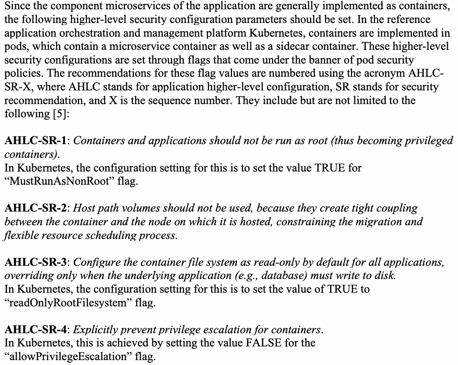
4.4 Authentication Policies
4.4 認証ポリシー
Authentication policies specify the process for validating identities. The integrity of this process and its strength determines the integrity of the authorization process since the latter depends on the strength of the authenticated identity. There are two types of identity needed in a microservices-based application:
認証ポリシーは、アイデンティティを検証するためのプロセスを指定する。認可プロセスは認証されたアイデンティティの強度に依存するため、このプロセスの完全性およびその強度が認可プロセスの完全性を決定する。マイクロサービスベースのアプリケーションでは、2種類のアイデンティティが必要とされる：
1.Microservices or workload identity
1.マイクロサービスまたはワークロードのアイデンティティ
2.End-user identity
2.エンドユーザーアイデンティティ
Service (microservice) identity is critical for the following reasons:
サービス（マイクロサービス）のアイデンティティは、以下の理由から極めて重要である：
•It enables the client to verify that the server with which it is communicating (server identity validated using the certificate it carries) is authorized to run the service. This assurance has to be provided by a secure naming service that maps the server identity to the service identity. In any orchestration platform (including Kubernetes), services can be moved around the nodes (server) for load balancing and service availability reasons. It is the responsibility of the control plane of the service mesh to refresh this mapping information by interacting with the API that contains this configuration information (e.g., through API server in Kubernetes) and conveying it to the sidecar proxy in the data plane of the service mesh.
•これによりクライアントは、通信相手のサーバー（そのサーバーが保持する証明書を用いて検証されたサーバーアイデンティティ）が当該サービスを実行する権限を持つことを確認できる。この保証は、サーバーアイデンティティをサービスアイデンティティにマッピングする安全なネーミングサービスによって提供されなければならない。いずれのオーケストレーションプラットフォーム（Kubernetesを含む）でも、負荷分散やサービス可用性の理由から、サービスはノード（サーバー）間を移動され得る。この構成情報を保持するAPIと対話し（例：KubernetesのAPIサーバーを通じて）、このマッピング情報を更新してサービスメッシュのデータプレーンにあるサイドカープロキシへ伝えることは、サービスメッシュのコントロールプレーンの責任である。
•The service identity is the basis for the target service to select and enforce applicable authorization policies.
•サービスアイデンティティは、ターゲットサービスが適用可能な認可ポリシーを選択および適用するための基礎となる。
4.4.1 Specifying Authentication Policies
4.4.1 認証ポリシーの指定
Associated with these identities are the corresponding authentication processes that the service meshes have to support:
これらのアイデンティティに関連付けられているのは、サービスメッシュがサポートしなければならない対応する認証プロセスである。
•Service-level authentication or peer authentication using service identity
•サービスアイデンティティを使用したサービスレベル認証またはピア認証
•End user authentication or request authentication using end user credentials
•エンドユーザークレデンシャルを使用したエンドユーザー認証またはリクエスト認証
It is assumed that the reference hosting platform has been configured with the high-level requirements outlined in Section 4.1. It is also assumed that the reference service mesh platform has been installed and configured with the initial requirements outlined in Section 4.2.
リファレンスホスティングプラットフォームは、セクション 4.1 に概説されている高レベルの要件で構成されていると想定する。また、リファレンスサービスメッシュプラットフォームは、セクション 4.2 に概説されている初期要件でインストールおよび構成されていると想定する。
4.4.2 Service-level Authentication
4.4.2 サービスレベル認証
Service-level authentication is the mutual authentication of the communicating services and setup of a secure TLS session. Enabling this requires the capability to define a policy object, which should meet the following requirements. These requirements are enablers for service-level authentication and are numbered using the acronym SAUN-SR-X, where SAUN stands for service-level authentication, SR stands for security recommendation, and X is the sequence number.:
サービスレベル認証とは、通信するサービスの相互認証とセキュアな TLS セッションのセットアップである。これを有効にするには、ポリシーオブジェクトを定義する機能が必要であり、そのポリシーオブジェクトは以下の要件を満たすべきである。これらの要件はサービスレベル認証を実現するものであり、SAUN-SR-X という頭字語を使用して番号が付けられている。ここで、SAUN はサービスレベル認証（service-level authentication）を表し、SR はセキュリティ推奨事項（security recommendation）を表し、X は一連番号である。:
SAUN-SR-1: A policy object relating to service-level authentication should be defined that requires mTLS be used for communication. The policy object should be expressive enough to be defined at various levels (given below) with features for overrides at the lower levels or inheritance of the requirement specified at the higher levels.
SAUN-SR-1: 通信にmTLSを使用することを要求する、サービスレベル認証に関連するポリシーオブジェクトを定義すべきである。このポリシーオブジェクトは、下位レベルでのオーバーライドや、上位レベルで指定された要件の継承のための機能を備え、さまざまなレベル（以下に示す）で定義できるだけの十分な表現力を持つべきである。
The following are the minimum required levels [6]:
以下は、最低限必要とされるレベルである [6]:
•Global level or the service mesh level
•グローバルレベルまたはサービスメッシュレベル
•Namespace level
•名前空間（Namespace）レベル
•Workload or microservices level, used for applying authentication and authorization policies for a subset of traffic to a subset of resources (e.g., particular microservices, hosts or ports)
•リソースのサブセット（特定のマイクロサービス、ホスト、ポートなど）に対するトラフィックのサブセットに認証および認可ポリシーを適用するために使用される、ワークロードまたはマイクロサービスレベル
•Port level, taking into account that certain traffic is designed for communicating through designated ports
•特定のトラフィックが指定されたポートを介して通信するように設計されていることを考慮した、ポートレベル
This form of authentication also requires assigning a strong identity to each service, authenticating that identity by mapping it to the server identity (where the service is hosted) and establishing the authenticity of the mapping using a digital signature. One way of implementing this is through a special digital authentication certificate (Secure Production Identity Framework for Everyone (SPIFFE)). To provide assurance that the server whose identity is found in the SPIFFE certificate is the one that is authorized to run the target service, the following requirements (also specified in SP 800-204A) are needed.
この形式の認証では、各サービスに強力なアイデンティティを割り当て、そのアイデンティティを（サービスがホストされている）サーバーのアイデンティティにマッピングすることによって認証し、デジタル署名を使用してそのマッピングの真正性を確立することも必要となる。これを実装する1つの方法は、特別なデジタル認証証明書（Secure Production Identity Framework for Everyone (SPIFFE)）を使用することである。SPIFFE証明書内にアイデンティティが記載されているサーバーが、対象のサービスを実行することを認可されたサーバーであるという保証を提供するために、以下の要件（SP 800-204Aでも規定されている）が必要となる。
SAUN-SR-2: If the certificate used for mTLS carries server identity, then the service mesh should provide a secure naming service that maps the server identity to the microservice name that is provided by the secure discovery service or DNS. This requirement is needed to ensure that the server is the authorized location for the microservices and to protect against network hijacking.
SAUN-SR-2: mTLSに使用される証明書がサーバーのアイデンティティを保持している場合、サービスメッシュは、サーバーのアイデンティティを、セキュアなディスカバリサービスまたはDNSによって提供されるマイクロサービス名にマッピングするセキュアなネーミングサービスを提供すべきである。この要件は、サーバーがマイクロサービスにとって認可された場所であることを確実にし、ネットワークハイジャックから保護するために必要である。
The information for mapping the server identity to a service is obtained by the control plane of the service mesh by accessing the configuration information from the platform that is hosting the microservices-based application. In Kubernetes, the control plane of the service mesh obtains the mapping information through the API server module of the Kubernetes platform and populates that information in the secure naming service. Thus, the mutual certificate validation not only enables validation of the associated service identities of both the client and target services but also enables creation of a secure mTLS session. In Istio, the policy object for this type of authentication is called “peer authentication.”
サーバーのアイデンティティをサービスにマッピングするための情報は、サービスメッシュのコントロールプレーンが、マイクロサービスベースのアプリケーションをホストしているプラットフォームの構成情報にアクセスすることによって取得する。Kubernetesでは、サービスメッシュのコントロールプレーンは、KubernetesプラットフォームのAPIサーバーモジュールを通じてマッピング情報を取得し、その情報をセキュアなネーミングサービスに格納する。したがって、相互の証明書検証により、クライアントサービスとターゲットサービスの双方に関連付けられたサービスアイデンティティの検証が可能になるだけでなく、セキュアなmTLSセッションの作成も可能になる。Istioでは、このタイプの認証のためのポリシーオブジェクトは「ピア認証（peer authentication）」と呼ばれる。
4.4.3 End User Authentication
4.4.3 エンドユーザー認証
For the mesh to authenticate end user credentials (EUC), the application must participate in some way. Client services that make the request should acquire and attach an appropriate credential to each request (e.g., a JWT) in the request header. End user authentication, or request authentication, is the process of validating the credentials of the end user making a request by extracting them from the request’s metadata and authenticating them (locally or against an external server). For example, a common flow at many organizations is to exchange an external EUC, like an Oauth bearer token, at ingress for an internal credential that is encoded within a JWT. The JWT can be created by a custom authentication provider or standards-based OpenID Connect provider.
メッシュがエンドユーザー資格情報（EUC）を認証するには、アプリケーションが何らかの形で関与しなければならない。リクエストを行うクライアントサービスは、適切な資格情報（JWTなど）を取得し、各リクエストのリクエストヘッダーに添付すべきである。エンドユーザー認証、すなわちリクエスト認証とは、リクエストのメタデータから資格情報を抽出し、（ローカルで、または外部サーバーと照合して）それらを認証することによって、リクエストを行っているエンドユーザーの資格情報を検証するプロセスである。たとえば、多くの組織における一般的なフローは、OAuthベアラートークンのような外部EUCを、イングレスにおいて、JWT内にエンコードされた内部資格情報と交換するというものである。JWTは、カスタム認証プロバイダーまたは標準ベースのOpenID Connectプロバイダーによって作成できる。
The minimal information requirement in an end user authentication policy is designated using the acronym EAUN-SR-X, where EAUN stands for end user authentication, SR stands for security recommendation, and X is the sequence number.:
エンドユーザー認証ポリシーにおける最小限の情報要件は、頭字語EAUN-SR-Xを使用して示される。ここで、EAUNはエンドユーザー認証（end user authentication）を表し、SRはセキュリティ推奨事項（security recommendation）を表し、Xは一連番号である。:
EAUN-SR-1: A request authentication policy must, at the minimum, provide the following information and must be enforced by the sidecar proxy:
EAUN-SR-1: リクエスト認証ポリシーは、最低限、次の情報を提供しなければならず、かつサイドカープロキシによって適用されなければならない:
•Instructions for extracting the credential from the request
•リクエストから資格情報を抽出するための手順
•Instructions for validating the credential
•資格情報を検証するための手順
For a JWT, this might include:
JWTの場合、これには以下が含まれる可能性がある:
•Location (header name) of the JWT token that contains the user’s claims
•ユーザーのクレームを含むJWTトークンの場所（ヘッダー名）
•How to extract the subject, claims, and issuers from the JWT
•JWTからサブジェクト、クレーム、および発行者を抽出する方法
•Public keys or the location for the key used for validating the JWT
•公開鍵、またはJWTの検証に使用される鍵の場所
4.5 Authorization Policies
4.5 認可ポリシー
Authorization policies, just like their authentication counterparts, can be specified at the service level as well as the end user level. In addition, authorization policies are expressed based on constructs of an access control model and may vary based on the nature of the application and enterprise-level directives. Further, the location of the access control data may vary depending on the identity and access management infrastructure in the enterprise. These variations result in the following variables:
認可ポリシーは、対応する認証ポリシーと同様に、サービスレベルだけでなくエンドユーザーレベルでも指定できる。加えて、認可ポリシーはアクセス制御モデルの構成要素に基づいて表現され、アプリケーションの性質や企業レベルの指令に基づいて異なる場合がある。さらに、アクセス制御データの場所は、企業内のアイデンティティおよびアクセス管理インフラストラクチャに応じて異なる場合がある。これらの違いにより、次の変数が生じる:
•Two authorization levels – service level and end user level
•2つの認可レベル – サービスレベルおよびエンドユーザーレベル
•Access control model used to express authorization policies
•認可ポリシーを表現するために使用されるアクセス制御モデル
•Location of the access control data in a centralized or external authorization server or carried as header data
•集中型または外部の認可サーバー内、あるいはヘッダーデータとして運ばれるアクセス制御データの場所
The supported access control in the service mesh uses abstraction to group one or more policy components (described below in Section 4.5.1) for specifying either service-level or end user-level authorization policies. Since microservices-based applications are implemented as APIs (e.g., Representational State Transfer (REST)ful API), authorization policy components described using key/value pairs will have attributes pertaining to an API, including the associated network protocols. The types of authorization policies are:
サービスメッシュでサポートされるアクセス制御は、抽象化を利用して1つ以上のポリシーコンポーネント（以下のセクション4.5.1で説明）をグループ化し、サービスレベルまたはエンドユーザーレベルのいずれかの認可ポリシーを指定する。マイクロサービスベースのアプリケーションはAPI（例：Representational State Transfer (REST)ful API）として実装されるため、キー／値のペアを使用して記述される認可ポリシーコンポーネントは、関連するネットワークプロトコルを含む、APIに関する属性を持つことになる。認可ポリシーの種類は以下のとおりである:
•Service-level authorization policies
•サービスレベル認可ポリシー
•End user-level authorization policies
•エンドユーザーレベル認可ポリシー
•Model-based authorization policies
•モデルベース認可ポリシー
4.5.1 Service-level Authorization Policies
4.5.1 サービスレベル認可ポリシー
Service-level authorization policies are defined using a policy object that provides positive or negative permission (authorization) with the following policy components:
サービスレベル認可ポリシーは、以下のポリシーコンポーネントを用いて肯定的または否定的な許可（認可）を与えるポリシーオブジェクトを使用して定義される:
a. The scope of the policy can span all applications at the service mesh level, namespace level, or one or more designated applications (microservice level). b. The permissions or operations can be restricted to one or more designated methods of a given service (e.g., an “HTTP GET method on the ‘/details’ path of an application named PRODUCT-CATALOG”) or to designated ports through which an application can be accessed. c. Conditions under which access can take place (e.g., possession of a token) are specified. d. Sources allowed access are specified at the namespace or a particular service level (in terms of the service’s runtime identity).
a. ポリシーのスコープは、サービスメッシュレベルもしくは名前空間レベルのすべてのアプリケーション、または1つ以上の指定されたアプリケーション（マイクロサービスレベル）に及ぶことができる。 b. 許可または操作は、所定のサービスの1つ以上の指定されたメソッド（例：「PRODUCT-CATALOGという名前のアプリケーションの『/details』パスに対するHTTP GETメソッド」）、あるいはアプリケーションにアクセスできる指定されたポートに制限できる。 c. アクセスが行われ得る条件（例：トークンの所持）が指定される。 d. アクセスを許可される送信元が、名前空間レベルまたは特定のサービスレベルで（サービスの実行時アイデンティティによって）指定される。
The requirements for a policy object for enabling service-level authorization policies are numbered using the acronym SAUZ-SR-X, where SAUZ stands for service-level authorization, SR stands for security recommendation, and X is the sequence number:
サービスレベル認可ポリシーを有効にするためのポリシーオブジェクトの要件には、頭字語SAUZ-SR-Xを使用して番号が付けられている。ここで、SAUZはサービスレベル認可（service-level authorization）を表し、SRはセキュリティ推奨事項（security recommendation）を表し、Xは一連番号である:
SAUZ-SR-1: “A policy object describing service-to-service access should be in place for all services in the mesh. At a minimum, these policies should restrict access to the namespace level (e.g., “services in namespace A can call services in namespace B”). Ideally, policies should restrict access to individual services (e.g., “service Foo in namespace A can call service Bar in namespace B”).”
SAUZ-SR-1: 「メッシュ内のすべてのサービスに対して、サービス間アクセスを記述するポリシーオブジェクトが配置されているべきである。最低限、これらのポリシーはアクセスを名前空間レベルで制限すべきである（例: 「名前空間Aのサービスは名前空間Bのサービスを呼び出すことができる」）。理想的には、ポリシーはアクセスを個々のサービス単位に制限すべきである（例: 「名前空間AのサービスFooは名前空間BのサービスBarを呼び出すことができる」）。」
Policies should describe the minimum access required for application functionality (e.g., “service ‘foo’ in namespace A can perform ‘GET /bar’ on service ‘bar’ in namespace B”).
ポリシーは、アプリケーションの機能に必要な最小限のアクセスを記述すべきである（例: 「名前空間Aのサービス『foo』は、名前空間Bのサービス『bar』に対して『GET /bar』を実行できる」）。
4.5.2 End-user Level Authorization Policies
4.5.2 エンドユーザーレベルの認可ポリシー
Given an authentication policy like Section 4.4.3, a sidecar in the mesh can extract a principal from the request to perform authorization on. Further, the sidecar typically has additional context about the request, including the resource being accessed (e.g., the path in an HTTP/REST API) and the action being taken (e.g., the HTTP verbs GET and PUT in the request to that API). This gives the sidecar enough information to act as a PEP and call a policy decision point.
セクション4.4.3のような認証ポリシーがあれば、メッシュ内のサイドカーは、認可の対象とするプリンシパルをリクエストから抽出できる。さらに、サイドカーは通常、アクセス対象のリソース（例: HTTP/REST API内のパス）や実行されるアクション（例: そのAPIへのリクエストにおけるHTTP動詞のGETおよびPUT）を含む、リクエストに関する追加のコンテキストを持っている。これにより、サイドカーは、PEPとして機能しポリシー決定ポイントを呼び出すのに十分な情報を得る。
This is the most common case, especially for organizations with traditional Identity and Access Management (IAM) systems that exist as an external service, often called by an Software Development Kit (SDK). To handle this case, a service mesh’s sidecar proxy will typically support calling external services to render an authentication and authorization verdict. For example, the reference implementation Istio supports this via Envoy’s (i.e., the sidecar proxy) external authorization service [15].
これは最も一般的なケースであり、特に、外部サービスとして存在し、多くの場合ソフトウェア開発キット（SDK）によって呼び出される従来型のアイデンティティおよびアクセス管理（IAM）システムを持つ組織に当てはまる。このケースに対処するため、サービスメッシュのサイドカープロキシは通常、認証および認可の判定を下すための外部サービスの呼び出しをサポートする。例えば、参照実装であるIstioは、Envoy（すなわちサイドカープロキシ）の外部認可サービス [15] を介してこれをサポートしている。
The requirements for enabling end-user level authorization policies are numbered using the acronym EAUZ-SR-X, where EAUZ stands for end-user level authorization, SR stands for security recommendation, and X is the sequence number:
エンドユーザーレベルの認可ポリシーを有効にするための要件には、頭字語EAUZ-SR-Xを使用して番号が付けられている。ここで、EAUZはエンドユーザーレベルの認可（end-user level authorization）を表し、SRはセキュリティ推奨事項（security recommendation）を表し、Xは一連番号である:
EUAZ-SR-1: When a sidecar communicates with an authentication or authorization system, that communication must be secured with either the mesh’s built-in service-to-service authentication and authorization capabilities or using an existing enterprise Identity and Access Management (IAM) that is not part of the service mesh.
EUAZ-SR-1: サイドカーが認証システムまたは認可システムと通信する場合、その通信は、メッシュに組み込まれたサービス間の認証および認可機能、あるいはサービスメッシュの一部ではない既存のエンタープライズのアイデンティティおよびアクセス管理（IAM）のいずれかを使用して保護されなければならない。
An example is the external Software as a Service (SaaS) IAM, such as AuthO.
例として、AuthOなどの外部のSoftware as a Service（SaaS）IAMが挙げられる。
EUAZ-SR-2: The sidecar should generate logs for every service request to ensure that authentication and authorization policies are enforced and relay telemetry data for the generation of metrics to ensure no degradation of service that will impact availability.
EUAZ-SR-2: サイドカーは、認証および認可ポリシーが確実に適用されるようにすべてのサービスリクエストについてログを生成し、可用性に影響を与えるサービスの劣化が生じないことを確実にするためにメトリクス生成用のテレメトリデータを中継すべきである。
End user authorization is not applied to the decision endpoint of the external authorization (PDP) service since the service is the principal making the call. It also avoids needing a default policy that allows all users to call the decision endpoint of the PDP. End user authorization should be applied to the PAP and other administrative endpoints of the authorization system, and applying that authorization can be facilitated by the mesh.
呼び出しを行うプリンシパルはサービスであるため、エンドユーザー認可は外部認可（PDP）サービスの決定エンドポイントには適用されない。これにより、すべてのユーザーにPDPの決定エンドポイントの呼び出しを許可するデフォルトポリシーを必要とすることも回避される。エンドユーザー認可は、認可システムのPAPやその他の管理エンドポイントに適用されるべきであり、その認可の適用はメッシュによって容易にできる。
However, there is another case that is common enough to address in which an external authorization system is not required. Making a network call to an authorization service for every hop in a service chain can be expensive and cause centralized failures. To mitigate these problems, many organizations will exchange end user credentials at ingress for an internal, trusted, authenticatable credential that conveys not just the user’s principal but also that user’s capabilities in the system. A JWT is frequently used for this because it is locally authenticatable and conveys the user’s principal (the JWT’s subject), the issuer of the JWT (issuer), and arbitrary claims that the organization can control (e.g., to use for access control).
ただし、外部認可システムを必要としない、取り上げるに値するほど一般的なもう1つのケースがある。サービスチェーン内のすべてのホップで認可サービスに対してネットワーク呼び出しを行うことは、コストが高くつき、集中型の障害を引き起こす可能性がある。これらの問題を軽減するために、多くの組織はイングレスでエンドユーザーのクレデンシャルを、ユーザーのプリンシパルだけでなくシステム内でのそのユーザーのケーパビリティも伝達する、内部の信頼された認証可能なクレデンシャルと交換する。JWTはローカルで認証可能であり、ユーザーのプリンシパル（JWTのsubject）、JWTの発行者（issuer）、および組織が制御可能な任意のクレーム（例えば、アクセス制御に使用するため）を伝達するため、この目的で頻繁に使用される。
Performing end user authorization based on a JWT is built directly into Envoy, the sidecar proxy of the reference mesh Istio. Envoy can be configured with a filter [16] that will process requests in two steps:
JWTに基づくエンドユーザー認可の実行は、参照メッシュIstioのサイドカープロキシであるEnvoyに直接組み込まれている。Envoyには、リクエストを次の2つのステップで処理するフィルター[16]を設定できる。
1.JWT token verification involves extracting the token from the request header, verifying whether issuers and audiences are allowed, fetching the public key, and verifying the digital signature on the token.
1.JWTトークンの検証には、リクエストヘッダーからのトークンの抽出、発行者（issuers）およびオーディエンス（audiences）が許可されているかどうかの検証、公開鍵の取得、およびトークンのデジタル署名の検証が含まれる。
2.Match the resources in the request to the claims in the token to determine whether the end user should be allowed access to the requested resources or denied.
2.リクエスト内のリソースをトークン内のクレームと照合し、エンドユーザーに対して要求されたリソースへのアクセスを許可すべきか拒否すべきかを判断する。
Envoy’s JWT filter acts as the PDP, making the access decision entirely locally. This requires that policy documents be small enough to reside on an individual sidecar proxy. Although a full ABAC is ideal for handling resource-level policies, the JWT filter is valuable as a steppingstone from a traditional system that only performs access control on the edge to a zero-trust system that performs authentication and authorization at each service. The limitation of this approach is that it becomes hard to revoke a user’s access once a JWT is issued. Community standards, such as Internet Engineering Task Force (IETF) Request for Comments (RFC) for OAuth2 Introspection, can be used to address this.
EnvoyのJWTフィルターはPDPとして機能し、アクセス決定を完全にローカルで行う。これには、ポリシー文書が個々のサイドカープロキシ上に置けるほど十分に小さいことが求められる。完全なABACはリソースレベルのポリシーを処理するのに理想的であるが、JWTフィルターは、エッジでのみアクセス制御を実行する従来のシステムから、各サービスで認証と認可を実行するゼロトラストシステムへと移行するための足がかりとして価値がある。このアプローチの限界は、JWTがいったん発行されるとユーザーのアクセス権を取り消すことが困難になる点である。これに対処するために、OAuth2 Introspectionに関するInternet Engineering Task Force（IETF）のRequest for Comments（RFC）などのコミュニティ標準を使用できる。
An example of an authorization policy that will enable the sidecar itself to make an access control decision based on claims in the JWT and enforce it, without calling on an external authorization system, is given below: apiVersion: security.istio.io/v1beta1 kind: AuthorizationPolicy metadata: name: backend namespace: product spec: action: ALLOW rules: - from: - source: principals: ["cluster.local/ns/product/sa/frontend"] to: - operation: methods: ["GET"] paths: ["/info*"] - operation: methods: ["POST"] paths: ["/data"] when: - key: request.auth.claims[iss] values: ["accounts.google.com"]
外部認可システムを呼び出すことなく、サイドカー自体がJWT内のクレームに基づいてアクセス制御の決定を下し、それを強制できるようにする認可ポリシーの例を以下に示す: apiVersion: security.istio.io/v1beta1 kind: AuthorizationPolicy metadata: name: backend namespace: product spec: action: ALLOW rules: - from: - source: principals: ["cluster.local/ns/product/sa/frontend"] to: - operation: methods: ["GET"] paths: ["/info*"] - operation: methods: ["POST"] paths: ["/data"] when: - key: request.auth.claims[iss] values: ["accounts.google.com"]
Figure 4.1 – An example Istio authorization policy
図 4.1 – Istio認可ポリシーの例
This allows the front end to call specific methods on the backend only if the request has an EUC attached issued by “accounts.google.com.”
これにより、リクエストに“accounts.google.com”によって発行されたEUCが添付されている場合に限り、フロントエンドはバックエンドの特定のメソッドを呼び出せる。
EUAZ-SR-3: All application traffic should carry end user credentials, and there should be a policy in the mesh enforcing that credentials are present.
EUAZ-SR-3: すべてのアプリケーショントラフィックはエンドユーザークレデンシャルを伝送すべきであり、クレデンシャルが存在することを強制するポリシーがメッシュ内に存在すべきである。
This is recommended even if the application is enforcing authentication and authorization independently of the mesh because these organization-wide controls allow functionalities like audit to be built on top of the mesh at a lower cost to central teams responsible for compliance and controls.
これは、アプリケーションがメッシュとは独立して認証および認可を実施している場合でも推奨される。これらの組織全体にわたる統制により、コンプライアンスや統制を担当する中央チームにとってより低いコストで、監査のような機能をメッシュ上に構築できるようになるためである。
4.5.3 Model-based Authorization Policies
4.5.3 モデルベースの認可ポリシー
The service-level authorization policies and a use case of end-user authorization policies that uses JWT are natively implemented in the proxies. Since these cannot be used for resource-level authorization policies, support for model-based authorization policies is needed as well. As already alluded to in Section 4.5.2, this requires a call from the proxy to an external authorization server, which holds the model-based authorization engine to obtain an access decision.
サービスレベルの認可ポリシーと、JWTを使用するエンドユーザー認可ポリシーのユースケースは、プロキシにネイティブに実装されている。これらはリソースレベルの認可ポリシーには使用できないため、モデルベースの認可ポリシーのサポートも必要である。セクション 4.5.2 で既に触れたように、これには、アクセス決定を取得するために、モデルベースの認可エンジンを保持する外部認可サーバーをプロキシから呼び出すことが必要となる。
The service principals in these model-based policies are identities (e.g., Service Account) provided by the underlying application orchestration platform (e.g., Kubernetes) and are the same as those used by authorization policies natively supported in the proxies. The user principals are usually obtained from the JWT. The popular access control models in the external authorization servers are RBAC and ABAC.
これらのモデルベースのポリシーにおけるサービスプリンシパルは、基盤となるアプリケーションオーケストレーションプラットフォーム（例: Kubernetes）によって提供されるアイデンティティ（例: Service Account）であり、プロキシでネイティブにサポートされている認可ポリシーで使用されるものと同じである。ユーザープリンシパルは通常、JWTから取得される。外部認可サーバーで一般的なアクセス制御モデルは、RBACおよびABACである。
4.6 Authorization Policy Elements
4.6 認可ポリシーの要素
The requirements that stipulate the minimal set of policy elements that should be present in authorization policies are given below and are numbered using the acronym APE-SR-X, where APE stands for authorization policy elements, SR stands for security recommendation, and X is the sequence number:
認可ポリシーに存在すべきポリシー要素の最小限のセットを規定する要件を以下に示す。これらには APE-SR-X という頭字語を使用して番号を付ける。ここで、APE は authorization policy elements（認可ポリシー要素）、SR は security recommendation（セキュリティ推奨事項）、X は連番を表す。
APE-SR-1: The authorization policy should, at the minimum, contain the following policy elements:
APE-SR-1: 認可ポリシーは、最低限、次のポリシー要素を含むべきである：
•Policy types – Positive (ALLOW) or Negative (DENY)
•ポリシータイプ – ポジティブ（ALLOW）またはネガティブ（DENY）
•Policy target or authorization scope – the namespace, a particular service (application name), and version
•ポリシー対象または認可スコープ – ネームスペース、特定のサービス（アプリケーション名）、およびバージョン
•Policy sources – covers the set of authorized services
•ポリシーソース – 認可されたサービスのセットを対象とする
•Policy operations – specifies the operations on the target resources that are covered under the policy
•ポリシーの操作 – 対象リソースに対する操作のうち、ポリシーの対象となるものを指定する
•Policy conditions – the metadata associated with the request that must be met for the application or invocation of the policy
•ポリシー条件 – ポリシーの適用または呼び出しのために満たさなければならない、リクエストに関連付けられたメタデータ
4.6.1 Policy Types
4.6.1 ポリシータイプ
Positive and negative policies are specified in order to set precedence relationships (e.g., DENY overrides and ALLOW). They are also used for situations that allow one type of policy for all services under a group and to specify exceptions (e.g., have an ALLOW policy for all services in a namespace but a DENY policy for a specified service)
ポジティブポリシーとネガティブポリシーは、優先関係を設定するために指定される（例：DENYオーバーライドおよびALLOW）。また、グループ配下のすべてのサービスに対して1つの種類のポリシーを許可し、例外を指定する状況にも使用される（例：ネームスペース内のすべてのサービスに対してはALLOWポリシーを設け、指定された特定のサービスに対してはDENYポリシーを設ける）。
4.6.2 Policy Target or Authorization Scope
4.6.2 ポリシー対象または認可スコープ
This refers to the target resources in terms of a set of services, versions, and the namespaces under which the services are located. The service can be specified in the following ways:
これは、サービス、バージョン、およびそれらのサービスが配置されているネームスペースのセットという観点での対象リソースを指す。サービスは次の方法で指定できる。
•Using path: The location of the target resource is specified using paths (e.g., for resources accessed using HTTP or Google Remote Procedure Call (gRPC) protocols)). The list of paths to be included in the authorization policy scope and paths that need to be excluded can be defined. Both of these sub-elements of the policy target component (i.e., the list of paths to be included and the list of paths to be excluded) are optional.
•パスの使用：対象リソースの場所はパスを使用して指定される（例：HTTPまたはGoogle Remote Procedure Call（gRPC）プロトコルを使用してアクセスされるリソースの場合）。認可ポリシースコープに含めるパスのリスト、および除外する必要があるパスを定義できる。ポリシー対象コンポーネントのこれら両方のサブ要素（すなわち、含めるパスのリストと除外するパスのリスト）は任意である。
•Using host name: In some instances, the target resources are specified using the host sub-element. The list of hosts to be included in the authorization policy scope as well as those hosts that need to be excluded can be defined. Both of these sub-elements of the policy target component (i.e., list of hosts to be included and the list of hosts to be excluded) are optional.
•ホスト名の使用：場合によっては、対象リソースはhostサブ要素を使用して指定される。認可ポリシースコープに含めるホストのリスト、および除外する必要があるホストを定義できる。ポリシー対象コンポーネントのこれら両方のサブ要素（すなわち、含めるホストのリストと除外するホストのリスト）は任意である。
•Using network ports: The network port through which the target resource (the service) is accessed is often specified using the port sub-element. The list of ports to be included in the authorization policy scope as well as those ports that need to be excluded can be defined. Both of these sub-elements of the policy target component (i.e., list of ports to be included and the list of ports to be excluded) are optional.
•ネットワークポートの使用：対象リソース（サービス）へのアクセスに使用されるネットワークポートは、多くの場合portサブ要素を使用して指定される。認可ポリシースコープに含めるポートのリスト、および除外する必要があるポートを定義できる。ポリシー対象コンポーネントのこれら両方のサブ要素（すなわち、含めるポートのリストと除外するポートのリスト）は任意である。
4.6.3 Policy Sources
4.6.3 ポリシーソース
The policy sources are the set of services that are authorized to operate on the set of resources specified under the policy target (specified using name, path, host name, and ports). The policy sources are usually specified using a service account or name (called principal), all services in a particular logical group (e.g., namespace), or all services that are accessed from a group of network locations (e.g., IP blocks). Both included and excluded principals, namespaces, and IP blocks can be specified in some implementations.
ポリシーソースとは、ポリシー対象（名前、パス、ホスト名、およびポートを使用して指定）で指定されたリソースのセットに対して操作を行うことを認可されているサービスのセットである。ポリシーソースは通常、サービスアカウントまたは名前（プリンシパルと呼ばれる）、特定の論理グループ（例：ネームスペース）内のすべてのサービス、または一群のネットワークロケーション（例：IPブロック）からアクセスされるすべてのサービスを使用して指定される。一部の実装では、含めるプリンシパル、ネームスペース、IPブロックと、除外するプリンシパル、ネームスペース、IPブロックの両方を指定できる。
4.6.4 Policy Operations
4.6.4 ポリシーの操作
APE-SR-2: The policy should cover all of the operations that are part of the application type. For example, if the application is implemented as a REST API, all of the operations (also called HTTP verbs or HTTP methods) that are part of the REST API must be included:
APE-SR-2: ポリシーは、アプリケーションタイプの一部であるすべての操作をカバーすべきである。例えば、アプリケーションがREST APIとして実装されている場合、REST APIの一部であるすべての操作（HTTP動詞またはHTTPメソッドとも呼ばれる）を含める必要がある:
POST: This is equivalent to creating a resource.
POST: これはリソースの作成と同等である。
GET: This is equivalent to reading the contents of the resource.
GET: これはリソースの内容の読み取りと同等である。
PUT: This is equivalent to updating the resource by replacing.
PUT: これは置換によるリソースの更新と同等である。
PATCH: This is equivalent to updating the resource by modifying.
PATCH: これは変更によるリソースの更新と同等である。
DELETE: This is equivalent to deleting the resource.
DELETE: これはリソースの削除と同等である。
If the resource is accessed using gRPC instead of a RESTful protocol, there is only one operation or method: “POST.” The authorization policy definition may also have a feature to specify the list of operations (methods) to be excluded. Both policy sub-elements – one to specify the operations to be included in the authorization policy scope and the other to be excluded – are optional.
リソースがRESTfulプロトコルの代わりにgRPCを使用してアクセスされる場合、操作またはメソッドは1つ（「POST」）のみ存在する。認可ポリシー定義は、除外する操作（メソッド）のリストを指定する機能を持つ場合もある。認可ポリシーのスコープに含める操作を指定するサブ要素と、除外する操作を指定するサブ要素のどちらのポリシーサブ要素も、オプションである。
4.6.5 Policy Conditions
4.6.5 ポリシー条件
Policy conditions specify the constraints in the form of a key-value pair for the metadata associated with the request. This metadata may cover the following:
ポリシー条件は、リクエストに関連付けられたメタデータに対する制約を、キーと値のペアの形式で指定する。このメタデータには、以下が含まれる場合がある。
•Metadata associated with the source: Some of the metadata (e.g., service account name, namespace, and IP blocks) are specified as part of the policy source specification itself. In addition, it is possible to list IP addresses in Classless Inter-Domain Routing (CIDR) format of the policy sources.
•送信元に関連付けられたメタデータ：メタデータの一部（サービスアカウント名、ネームスペース、IPブロックなど）は、ポリシーソースの指定自体の一部として指定される。さらに、ポリシーソースのIPアドレスをクラスレスドメイン間ルーティング（CIDR）形式で列挙することも可能である。
•Metadata associated with the request: In this type of metadata, the parameters or attributes that pertain to a specific request can be specified. These parameters can include an audience that can present the authentication information expressed in the form of a Uniform Resource Locator (URL) (only applicable to HTTP protocol-based requests), a specific end user identifier associated with the audience that can present the authentication credentials, or the claim name that is carried in the token presented by the presenter. In addition, parameters that pertain to the user-agent (e.g., browser name) can also be specified for HTTP protocol-based requests.
•リクエストに関連付けられたメタデータ：このタイプのメタデータでは、特定のリクエストに関係するパラメータまたは属性を指定できる。これらのパラメータには、Uniform Resource Locator（URL）の形式で表される認証情報を提示できるオーディエンス（HTTPプロトコルベースのリクエストにのみ適用可能）、認証クレデンシャルを提示できるオーディエンスに関連付けられた特定のエンドユーザー識別子、または提示者が提示するトークンで運ばれるクレーム名を含めることができる。さらに、HTTPプロトコルベースのリクエストに対しては、ユーザーエージェントに関係するパラメータ（ブラウザ名など）も指定できる。
•Metadata associated with the destination: The range of allowable IP addresses can be specified in CIDR format as well as the associated list of ports.
•送信先に関連付けられたメタデータ：許可されるIPアドレスの範囲をCIDR形式で指定でき、関連するポートのリストも指定できる。
4.6.6 Default Authorization Policy
4.6.6 デフォルトの認可ポリシー
APE-SR-3: A default policy should be authored in the system that rejects all requests that are unauthenticated, mandates that service and end-user credentials be present on every request, restricts all communication to services within the application’s own namespace, and allows service communication across namespaces only through an explicit policy.
APE-SR-3：未認証のリクエストをすべて拒否し、すべてのリクエストにサービスおよびエンドユーザーのクレデンシャルが存在することを義務付け、すべての通信をアプリケーション自身のネームスペース内のサービスに制限し、ネームスペースをまたぐサービス通信は明示的なポリシーを通じてのみ許可するデフォルトポリシーを、システム内に作成すべきである。
5 ABAC Deployment for Service Mesh
5 サービスメッシュ向けABACの導入
The last section introduced three different types of authorization policies, including two use cases for end-user level authorization policies. This section will leverage those architectural choices to describe an ABAC-based authorization framework in the service mesh:
前節では、エンドユーザーレベルの認可ポリシーに関する2つのユースケースを含む、3つの異なるタイプの認可ポリシーを紹介した。本節では、それらのアーキテクチャ上の選択肢を活用して、サービスメッシュにおけるABACベースの認可フレームワークについて説明する：
•Security assurance for authorization framework enforcement
•認可フレームワーク施行のセキュリティ保証
•Supporting infrastructure for authorization requests
•認可リクエストをサポートするインフラストラクチャ
•Advantages of an ABAC authorization framework for service mesh
•サービスメッシュ向けABAC認可フレームワークの利点
•Enforcement alternatives in proxies
•プロキシにおける施行の代替案
5.1 Reference Monitor Concept in Authorization Framework
5.1 認可フレームワークにおける参照モニターの概念
The authorization policy enforcement mechanism implemented in the service mesh for a microservices-based application must satisfy the three requirements of a reference monitor concept. It must be 1) non-bypassable, 2) protected from modification, and 3) verified and tested to be correct. These three requirements can be ensured by the following:
マイクロサービスベースのアプリケーション向けにサービスメッシュで実装される認可ポリシー施行メカニズムは、参照モニター概念の3つの要件を満たさなければならない。すなわち、1) バイパス不可能であること、2) 変更から保護されていること、3) 正しいことが検証およびテストされていること、である。これら3つの要件は、以下によって確保できる：
•Every request from a client to the microservices-based application, from one service to another (inter-services call), and from a microservice to an external application is intercepted by the ingress gateway, sidecar proxy, and egress proxy, respectively. These PEPs are non-bypassable.
•クライアントからマイクロサービスベースのアプリケーションへのすべてのリクエスト、あるサービスから別のサービスへのすべてのリクエスト（サービス間呼び出し）、およびマイクロサービスから外部アプリケーションへのすべてのリクエストは、それぞれイングレスゲートウェイ、サイドカープロキシ、およびエグレスプロキシによってインターセプトされる。これらのPEPはバイパス不可能である。
•The policy enforcement modules are independent executables that are decoupled from the application logic and cannot be modified.
•ポリシー施行モジュールは、アプリケーションロジックから切り離された独立した実行可能ファイルであり、変更することはできない。
•Their outcome can be independently verified and tested through both shadow operations and live production requests.
•それらの結果は、シャドウ運用と本番環境の実リクエストの双方を通じて、独立して検証およびテストできる。
In short, a proxy running in the data plane of the service mesh is the reference monitor with respect to authorization enforcement. The authorization policy engine (e.g., NGAC-based ABAC policy engine) implemented as a container executing either natively in the proxy memory space or callable from a corresponding filter module in the proxy runs as a separate process that does not share any memory space with the calling application. Hence, it satisfies the requirement of a security kernel.
要約すると、サービスメッシュのデータプレーンで実行されるプロキシが、認可の施行に関する参照モニターである。プロキシのメモリ空間でネイティブに実行されるか、またはプロキシ内の対応するフィルターモジュールから呼び出し可能なコンテナとして実装された認可ポリシーエンジン（例：NGACベースのABACポリシーエンジン）は、呼び出し元アプリケーションとメモリ空間を一切共有しない別個のプロセスとして実行される。したがって、セキュリティカーネルの要件を満たす。
5.2 Supporting Infrastructure for ABAC Authorization Framework
5.2 ABAC認可フレームワークのサポートインフラストラクチャ
Now consider the basic building blocks of the supporting infrastructure for service-to-service and end user + service-to-service requests.
ここで、サービス間リクエストおよびエンドユーザー＋サービス間リクエスト向けのサポートインフラストラクチャの基本的な構成要素を検討する。
5.2.1 Service-to-Service Request (SVC-SVC) – Supporting Infrastructure
5.2.1 サービス間リクエスト（SVC-SVC）– サポートインフラストラクチャ
The policy object used for authorizing this type of request was described in Section 4.5.1. Service-to-service requests must be authorized based on the identity of the calling and called services. The trusted document that carries the identity of the service is an X.509 certificate issued by one of the control plane components of the service mesh after verifying whether the requested identity is valid for the microservice by consulting an identity registry. The proxy communicates with this control plane component through a local agent, obtains a certificate, and sends it to the proxy, which then performs the certificate validation process on behalf of the calling service or client during each service request. The identity is encoded as URI and carried in a certificate’s SAN (subject alternate name) field. It must be mentioned that the certificates that carry service account identities are short-lived certificates (rotated every hour or few hours) rather than the conventional HTTPS TLS terminating certificates whose validity lasts for several months.
このタイプのリクエストの認可に使用されるポリシーオブジェクトは、4.5.1節で説明した。サービス間リクエストは、呼び出し元サービスおよび呼び出し先サービスのアイデンティティに基づいて認可されなければならない。サービスのアイデンティティを運ぶ信頼された文書はX.509証明書であり、これは、アイデンティティレジストリを参照して、要求されたアイデンティティがそのマイクロサービスに対して有効かどうかを検証した後に、サービスメッシュのコントロールプレーンコンポーネントの1つによって発行される。プロキシはローカルエージェントを通じてこのコントロールプレーンコンポーネントと通信し、証明書を取得してプロキシに送信する。その後プロキシは、各サービスリクエストの際に、呼び出し元のサービスまたはクライアントに代わって証明書の検証プロセスを実行する。アイデンティティはURIとしてエンコードされ、証明書のSAN（subject alternate name、サブジェクト代替名）フィールドで運ばれる。なお、サービスアカウントのアイデンティティを運ぶ証明書は、有効期間が数か月続く従来のHTTPS TLS終端用証明書ではなく、短命の証明書（1時間ごとまたは数時間ごとにローテーションされる）であることに言及しておかなければならない。
5.2.2 End User + Service-to-Service Request (EU+SVC-SVC) – Supporting Infrastructure
5.2.2 エンドユーザー＋サービス間リクエスト（EU+SVC-SVC）– サポートインフラストラクチャ
The policy object used for authorizing this type of request was described in Section 4.5.2. This request type requires the verification of two identities: the calling user identity and the service identity. As described in the previous section, the service mesh provides the feature to perform authorization based on service identities. Since this is a standard feature, no extra components need to be built in the service mesh infrastructure for this type of authorization. However, when end user identities are introduced for authorization, the authorization framework should be tightly integrated with the following components of the architecture:
このタイプのリクエストの認可に使用されるポリシーオブジェクトは、4.5.2節で説明した。このリクエストタイプでは、呼び出し元ユーザーのアイデンティティとサービスのアイデンティティという2つのアイデンティティの検証が必要である。前節で説明したように、サービスメッシュは、サービスのアイデンティティに基づいて認可を実行する機能を提供する。これは標準機能であるため、このタイプの認可のためにサービスメッシュインフラストラクチャ内に追加のコンポーネントを構築する必要はない。しかし、認可のためにエンドユーザーのアイデンティティが導入される場合、認可フレームワークは、アーキテクチャの以下のコンポーネントと緊密に統合されるべきである：
•The service orchestration control plane for obtaining application object attributes as well as attributes of the registered application users (which includes user credentials), thus playing the role of PIP in ABAC-based authorization
•アプリケーションオブジェクトの属性、および登録済みアプリケーションユーザーの属性（ユーザークレデンシャルを含む）を取得するためのサービスオーケストレーションコントロールプレーン。これにより、ABACベースの認可においてPIPの役割を果たす
•A service mesh control plane for obtaining tokens that encode the claims based on the authorization decision
•認可決定に基づくクレームをエンコードしたトークンを取得するためのサービスメッシュコントロールプレーン
•A service mesh data plane in the service proxy for making calls to the authorization engine (which is just another service), obtaining the authorization decision, enforcing the service-to-service authorization policies, making calls to the service mesh control plane for authorization tokens (e.g., JWT), and attaching the tokens to the service request
•認可エンジン（これは単なる別のサービスである）への呼び出しの実行、認可決定の取得、サービス間認可ポリシーの施行、認可トークン（例：JWT）を得るためのサービスメッシュコントロールプレーンへの呼び出しの実行、およびサービスリクエストへのトークンの添付を行うための、サービスプロキシ内のサービスメッシュデータプレーン
An advantage of an EU+SVC-SVC request processing scheme is that authorizations at a finer level of granularity than the method level can be specified, and conformant claims can be included in the authorization token. A disadvantage is that there is overhead involved in enforcing two layers of authorization – one layer based on policies specified for SVC-SVC requests and a second layer based on EU+SVC-SVC requests. Access control processing logic based on the second layer involves multiple calls by service proxy, such as (1) a call to the authorization engine service to obtain the access decision after obtaining the user attributes (including user credentials) and application object attributes from the orchestration system, (2) obtaining the authorization token from the service mesh control plane based on the access decision, and (3) including the authorization token along with the service request.
EU+SVC-SVCリクエスト処理方式の利点は、メソッドレベルよりも細かい粒度の認可を指定でき、それに適合するクレームを認可トークンに含められることである。欠点は、2層の認可、すなわちSVC-SVCリクエストに対して指定されたポリシーに基づく層と、EU+SVC-SVCリクエストに基づく第2の層を施行することに伴うオーバーヘッドがあることである。第2の層に基づくアクセス制御処理ロジックには、サービスプロキシによる複数の呼び出しが伴う。例えば、(1) オーケストレーションシステムからユーザー属性（ユーザークレデンシャルを含む）およびアプリケーションオブジェクト属性を取得した後に、アクセス決定を得るために認可エンジンサービスを呼び出すこと、(2) アクセス決定に基づいてサービスメッシュコントロールプレーンから認可トークンを取得すること、および (3) サービスリクエストとともに認可トークンを含めることである。
5.3 Advantages of ABAC Authorization Framework for Service Mesh
5.3 サービスメッシュ向けABAC認可フレームワークの利点
This section provides the justification for the various building blocks of the architecture for the authorization framework (e.g., the service mesh and NGAC-based ABAC model). It also highlights the scalability and flexibility of certain components such as proxy APIs and the NGAC authorization engine.
本節では、認可フレームワークのアーキテクチャを構成する各種の構成要素（例：サービスメッシュおよびNGACベースのABACモデル）の妥当性の根拠を示す。また、プロキシAPIやNGAC認可エンジンなどの特定のコンポーネントのスケーラビリティと柔軟性についても強調する。
a. A service mesh is the right architecture for the enforcement of authorization policies since the components involved are moved out of the application and executed in a space where they can form a security kernel that can be vetted. b. Both types of authorization requests (i.e., SVC-SVC and EU-SVC-SVC) can be handled by a runtime infrastructure that involves the coupling of an orchestration platform control plane, service mesh control plane, and mesh data plane to the access control engine. c. The extensible API of the proxy can be used to integrate any authorization engine using the appropriate type of access control model. ABAC has been found to be one of the most flexible, scalable access control models because of its ability to incorporate any number and type of attributes associated with the subject, object, and environment. d. Performance requirements for the authorization engine are met due to the linear time processing speed of the graph-based, NGAC-based ABAC model. e. The flexibility outlined in (c) can be leveraged to incorporate models for both application and data protection by making data protection models as part of the authorization server.
a. サービスメッシュは、認可ポリシーの施行に適したアーキテクチャである。関与するコンポーネントがアプリケーションの外に移され、精査可能なセキュリティカーネルを形成できる空間で実行されるためである。 b. 両方のタイプの認可リクエスト（すなわちSVC-SVCおよびEU-SVC-SVC）は、オーケストレーションプラットフォームのコントロールプレーン、サービスメッシュのコントロールプレーン、およびメッシュのデータプレーンをアクセス制御エンジンに結合したランタイムインフラストラクチャによって処理できる。 c. プロキシの拡張可能なAPIを使用して、適切なタイプのアクセス制御モデルを用いる任意の認可エンジンを統合できる。ABACは、サブジェクト、オブジェクト、および環境に関連付けられた属性を、数やタイプを問わず組み込めることから、最も柔軟でスケーラブルなアクセス制御モデルの1つであることが分かっている。 d. 認可エンジンに対する性能要件は、グラフベースであるNGACベースのABACモデルの線形時間の処理速度によって満たされる。 e. (c)で概説した柔軟性を活用し、データ保護モデルを認可サーバーの一部とすることで、アプリケーション保護とデータ保護の両方のモデルを組み込むことができる。
5.4 Enforcement Alternatives in Proxies
5.4 プロキシにおける施行の代替案
Authorization can be enforced through a native structure (e.g., authorization policy) supported in the particular version of the service mesh or using calls to an external authorization server. The external authorization server can use any access control model and any representation of policy expressions (logical rules or acyclic graph representations), but the mediation of a request coming into the proxy can be performed in the following ways:
認可は、サービスメッシュの特定のバージョンでサポートされるネイティブな構造（例：認可ポリシー）を通じて施行することも、外部認可サーバーへの呼び出しを使用して施行することもできる。外部認可サーバーは、任意のアクセス制御モデル、およびポリシー式の任意の表現（論理規則または非巡回グラフ表現）を使用できるが、プロキシに入ってくるリクエストの仲介は、以下の方法で実行できる：
a. Each request is passed on to the external authorization server through the external authorization filter in the proxy, and the response from the authorization server is used for request mediation in the form of ALLOW or DENY. b. Prestored ACLs can be used in the proxy itself, generated by calls to the authorization server. If the authorization server uses an enterprise-wide access control model, an administrative API may be needed that will perform the function of mapping the enterprise resources to resources, users, and groups pertaining to the service served by its proxy to generate ACLs that are customized for the service.
a. 各リクエストは、プロキシ内の外部認可フィルターを通じて外部認可サーバーに渡され、認可サーバーからの応答が、ALLOWまたはDENYの形でリクエストの仲介に使用される。 b. 認可サーバーへの呼び出しによって生成され、事前に格納されたACLを、プロキシ自体で使用できる。認可サーバーがエンタープライズ全体のアクセス制御モデルを使用している場合、そのプロキシが受け持つサービス向けにカスタマイズされたACLを生成するために、エンタープライズのリソースを、当該サービスに関係するリソース、ユーザー、およびグループにマッピングする機能を果たす管理APIが必要になることがある。
6 Summary and Conclusions
6 要約および結論
Deployment guidance has been provided for an ABAC-based authorization framework for securing microservices-based applications using a service mesh. Background information on a reference platform for orchestration and resource management of microservices-based applications in terms of constituent building blocks and functional capabilities is outlined in Section 2. In the same section, the architectural layers and features of a reference platform for service mesh are described. Section 3 provides background information on ABAC and discusses two representational structures and associated functional architecture.
サービスメッシュを使用してマイクロサービスベースのアプリケーションを保護するための、ABACベースの認可フレームワークに関する導入ガイダンスを提供した。マイクロサービスベースのアプリケーションのオーケストレーションおよびリソース管理のための参照プラットフォームに関する背景情報は、構成要素および機能的能力の観点から、第2節に概説されている。同じ節では、サービスメッシュの参照プラットフォームのアーキテクチャ層と機能についても説明している。第3節では、ABACに関する背景情報を提供し、2つの表現構造と、それに関連する機能アーキテクチャについて論じている。
Section 4 provides the building blocks of the authentication and authorization framework – the set of recommendations for settings/defaults of those features of the service mesh that provide the operational assurances for applications, specifically for implementing authentication and authorization policies. The recommendations span mechanisms for supporting both end user and service level authentication and authorization policies. The minimal set of policy elements needed in authorization policies is also outlined.
第4節では、認証および認可フレームワークの構成要素、すなわち、アプリケーションに運用上の保証を与えるサービスメッシュの機能、とりわけ認証ポリシーおよび認可ポリシーを実装するための機能の設定／デフォルトに関する一連の推奨事項を提供する。これらの推奨事項は、エンドユーザーレベルとサービスレベルの双方の認証ポリシーおよび認可ポリシーをサポートするためのメカニズムにわたっている。認可ポリシーに必要な最小限のポリシー要素のセットについても概説している。
The presence of a reference monitor concept in the authorization framework, the description of the supporting infrastructure for implementing the framework, the advantages the service mesh provides for implementation of an ABAC authorization framework, and the enforcement alternatives in proxies form the content for Section 5.
認可フレームワークにおける参照モニターの概念の存在、フレームワークを実装するためのサポートインフラストラクチャの説明、ABAC認可フレームワークの実装に対してサービスメッシュが提供する利点、およびプロキシにおける施行の代替案が、第5節の内容を構成している。
The list of all recommendations for deployment of an ABAC-based authentication and authorization framework for microservices-based application using a service mesh is given in Appendix A.
サービスメッシュを使用したマイクロサービスベースのアプリケーション向けABACベースの認証および認可フレームワークの導入に関するすべての推奨事項のリストは、付録Aに記載されている。
References
参考文献
[1] Rose S, Borchert O, Mitchell S, Connelly S (2020) Zero Trust Architecture. (National Institute of Standards and Technology, Gaithersburg, MD), NIST Special Publication
[1] Rose S, Borchert O, Mitchell S, Connelly S (2020) Zero Trust Architecture. (National Institute of Standards and Technology, Gaithersburg, MD), NIST Special Publication
(SP) 800-207. https://doi.org/10.6028/NIST.SP.800-207
(SP) 800-207. https://doi.org/10.6028/NIST.SP.800-207
[2] Red Hat (2021) What is CI/CD? Available at https://www.redhat.com/en/topics/devops/what-is-ci-cd#:~:text=CI%2FCD%20is%20a%20method,continuous%20delivery%2C%20and%20continuous%20deployment
[2] Red Hat (2021) What is CI/CD? 入手先: https://www.redhat.com/en/topics/devops/what-is-ci-cd#:~:text=CI%2FCD%20is%20a%20method,continuous%20delivery%2C%20and%20continuous%20deployment
[3] Red Hat (2021) What is DevSecOps? Available at https://www.redhat.com/en/topics/devops/what-is-devsecops
[3] Red Hat (2021) What is DevSecOps? 入手先: https://www.redhat.com/en/topics/devops/what-is-devsecops
[4] Chandramouli R (2019) Security Strategies for Microservices-based Application Systems. (National Institute of Standards and Technology, Gaithersburg, MD), NIST Special Publication (SP) 800-204. https://doi.org/10.6028/NIST.SP.800-204
[4] Chandramouli R (2019) Security Strategies for Microservices-based Application Systems. (National Institute of Standards and Technology, Gaithersburg, MD), NIST Special Publication (SP) 800-204. https://doi.org/10.6028/NIST.SP.800-204
[5] Hu VC, Ferraiolo DF, Chandramouli R, Kuhn DR (2018) Attribute-Based Access Control (Artech House, Boston USA).
[5] Hu VC, Ferraiolo DF, Chandramouli R, Kuhn DR (2018) Attribute-Based Access Control (Artech House, Boston USA).
[6] Chandramouli R, Butcher Z (2020) Building Secure Microservices-based Applications using Service-Mesh Architecture. (National Institute of Standards and Technology, Gaithersburg, MD), NIST Special Publication (SP) 800-204A. https://doi.org/10.6028/NIST.SP.800-204A
[6] Chandramouli R, Butcher Z (2020) Building Secure Microservices-based Applications using Service-Mesh Architecture. (National Institute of Standards and Technology, Gaithersburg, MD), NIST Special Publication (SP) 800-204A. https://doi.org/10.6028/NIST.SP.800-204A
原本PDFの抜粋画像
| [8] Ramakani A (2020) Kong API Gateway – From Zero to Production (Medium.com). | |
| Available at | https://medium.com/swlh/kong-api-gateway-zero-to-production- |
| 5b8431495ee | |
| [9] Agarwal G (2020) How to Manage Microservices on Kubernetes With Istio | |
| (Medium.com). Available at https://medium.com/better-programming/how-to-manage- | |
| microservices-on-kubernetes-with-istio-c25e97a60a59 | |
| [10] Agarwal G (2020) How Istio Works Behind the Scenes on Kubernetes (Medium.com). | |
| Available at https://medium.com/better-programming/how-istio-works-behind-the- | |
| scenes-on-kubernetes-aeb8003f2cb5 | |
| [11] InterNational Committee for Information Technology Standards (2020) INCITS 565- | |
| 2020 - Information technology - Next Generation Access Control (INCITS, | |
| Washington, DC). Available at | |
| https://standards.incits.org/apps/group_public/project/details.php?project_id=2328 |
原本PDFの抜粋画像
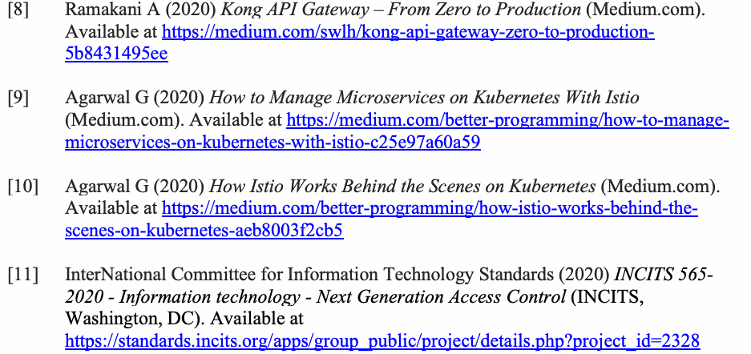
| [8] Ramakani A (2020) Kong API Gateway – From Zero to Production (Medium.com). | |
| 入手先: | https://medium.com/swlh/kong-api-gateway-zero-to-production- |
| 5b8431495ee | |
| [9] Agarwal G (2020) How to Manage Microservices on Kubernetes With Istio | |
| (Medium.com). 入手先: https://medium.com/better-programming/how-to-manage- | |
| microservices-on-kubernetes-with-istio-c25e97a60a59 | |
| [10] Agarwal G (2020) How Istio Works Behind the Scenes on Kubernetes (Medium.com). | |
| 入手先: https://medium.com/better-programming/how-istio-works-behind-the- | |
| scenes-on-kubernetes-aeb8003f2cb5 | |
| [11] InterNational Committee for Information Technology Standards (2020) INCITS 565- | |
| 2020 - Information technology - Next Generation Access Control (INCITS, | |
| Washington, DC). 入手先: | |
| https://standards.incits.org/apps/group_public/project/details.php?project_id=2328 |
[12] Mell P, Shook J, Harang R, Gavrila S (2017) Linear Time Algorithms to Restrict Insider Access using Multi-Policy Access Control Systems. Journal of Wireless Mobile Networks, Ubiquitous Computing, and Dependable Applications 8(1):4-25. https://doi.org/10.22667/JOWUA.2017.03.31.004
[12] Mell P, Shook J, Harang R, Gavrila S (2017) Linear Time Algorithms to Restrict Insider Access using Multi-Policy Access Control Systems. Journal of Wireless Mobile Networks, Ubiquitous Computing, and Dependable Applications 8(1):4-25. https://doi.org/10.22667/JOWUA.2017.03.31.004
[13] Ferraiolo D, Chandramouli R, Hu V, Kuhn R (2016) A Comparison of Attribute Based Access Control (ABAC) Standards for Data Service Applications: Extensible Access Control Markup Language (XACML) and Next Generation Access Control (NGAC) (National Institute of Standards and Technology, Gaithersburg, MD), NIST Special Publication (SP) 800-204A. https://doi.org/10.6028/NIST.SP.800-178
[13] Ferraiolo D, Chandramouli R, Hu V, Kuhn R (2016) A Comparison of Attribute Based Access Control (ABAC) Standards for Data Service Applications: Extensible Access Control Markup Language (XACML) and Next Generation Access Control (NGAC) (National Institute of Standards and Technology, Gaithersburg, MD), NIST Special Publication (SP) 800-204A. https://doi.org/10.6028/NIST.SP.800-178
[14] Agarwal G (2020) Enable Mutual TLS Authentication between your Kubernetes Workloads Using Istio (Medium.com). Available at https://medium.com/better-programming/enable-mutual-tls-authentication-between-your-kubernetes-workloads-using-istio-65338c8adf82
[14] Agarwal G (2020) Enable Mutual TLS Authentication between your Kubernetes Workloads Using Istio (Medium.com). 入手先: https://medium.com/better-programming/enable-mutual-tls-authentication-between-your-kubernetes-workloads-using-istio-65338c8adf82
[15] Envoy (2021) External Authorization. Available at https://www.envoyproxy.io/docs/envoy/v1.17.0/intro/arch_overview/security/ext_authz_filter#arch-overview-ext-authz
[15] Envoy (2021) External Authorization. 入手先: https://www.envoyproxy.io/docs/envoy/v1.17.0/intro/arch_overview/security/ext_authz_filter#arch-overview-ext-authz
[16] Envoy (2021) JWT Authentication. Available at https://www.envoyproxy.io/docs/envoy/v1.17.0/configuration/http/http_filters/jwt_authn_filter#config-http-filters-jwt-authn
[16] Envoy (2021) JWT Authentication. 入手先: https://www.envoyproxy.io/docs/envoy/v1.17.0/configuration/http/http_filters/jwt_authn_filter#config-http-filters-jwt-authn
[17] Hu VC, Ferraiolo DF, Kuhn DR, Schnitzer A, Sandlin K, Miller R, Scarfone K (2014) Guide to Attribute Based Access Control (ABAC) Definitions and Considerations. (National Institute of Standards and Technology, Gaithersburg, MD), NIST Special Publication (SP) 800-
[17] Hu VC, Ferraiolo DF, Kuhn DR, Schnitzer A, Sandlin K, Miller R, Scarfone K (2014) Guide to Attribute Based Access Control (ABAC) Definitions and Considerations. (National Institute of Standards and Technology, Gaithersburg, MD), NIST Special Publication (SP) 800-
162.https://doi.org/10.6028/NIST.SP.800-162
162.https://doi.org/10.6028/NIST.SP.800-162
原本PDFの抜粋画像
| TAG | RECOMMENDATION TEXT | FRAMEWORK AREA |
| ISMC-SR-1 | If certificate-based authentication is used for authenticating service calls, the signing certificate used by the service mesh’s CA module should be rooted in the organization’s existing PKI to allow for auditability, rotation, and revocation. | Initial Service Mesh Configuration |
| ISMC-SR-2 | Communication between the service mesh control plane and the application orchestration and resource management platform’s configuration server must be authenticated and authorized. | Initial Service Mesh Configuration |
| AHLC-SR-1 | Containers and applications should not be run as root (thus | Higher-level Security Configuration Parameters for Applications |
| becoming privileged containers). | ||
| In Kubernetes, the configuration setting for this is to set the | ||
| value TRUE for “MustRunAsNonRoot” flag. | ||
| AHLC-SR-2 | Host path volumes should not be used, because they create tight coupling between the container and the node on which it is hosted, constraining the migration and flexible resource scheduling process. | Higher-level Security Configuration Parameters for Applications |
| AHLC-SR-3 | Configure the container file system as read-only by default for | Higher-level Security Configuration Parameters for Applications |
| all applications, overriding only when the underlying | ||
| application (e.g., database) must write to disk. | ||
| In Kubernetes, the configuration setting for this is to set the | ||
| value of TRUE to “readOnlyRootFilesystem” flag. | ||
| AHLC-SR-4 | Explicitly prevent privilege escalation for containers. | Higher-level Security Configuration Parameters for Applications |
| In Kubernetes, this is achieved by setting the value FALSE for | ||
| the “allowPrivilegeEscalation” flag. |
原本PDFの抜粋画像
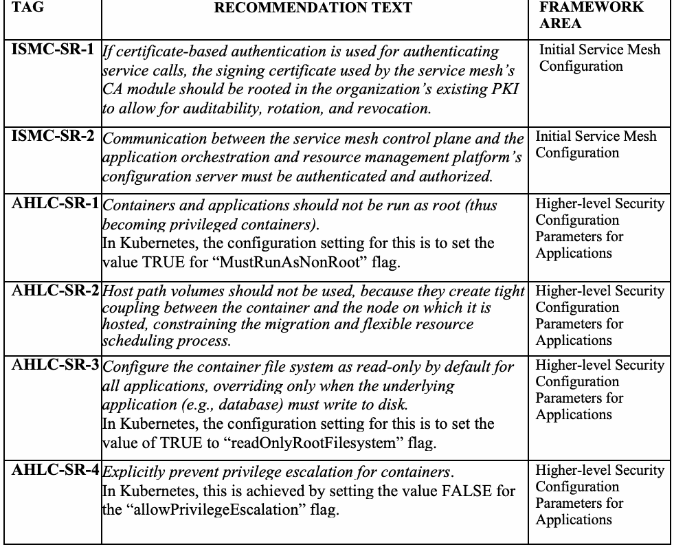
| タグ | 推奨事項の文面 | フレームワーク領域 |
| ISMC-SR-1 | サービス呼び出しの認証に証明書ベースの認証を使用する場合、監査可能性、ローテーション、および失効を可能にするために、サービスメッシュのCAモジュールが使用する署名証明書は、組織の既存のPKIをルートとすべきである。 | 初期サービスメッシュ構成 |
| ISMC-SR-2 | サービスメッシュのコントロールプレーンと、アプリケーションオーケストレーションおよびリソース管理プラットフォームの構成サーバーとの間の通信は、認証および認可されなければならない。 | 初期サービスメッシュ構成 |
| AHLC-SR-1 | コンテナおよびアプリケーションはrootとして実行すべきではない（rootとして実行すると | アプリケーション向けの上位レベルのセキュリティ構成パラメータ |
| 特権コンテナになる）。 | ||
| Kubernetesでは、このための構成設定は、 | ||
| “MustRunAsNonRoot”フラグに値TRUEを設定することである。 | ||
| AHLC-SR-2 | ホストパスボリュームは使用すべきではない。コンテナとそれをホストするノードとの間に密結合を生じさせ、移行および柔軟なリソーススケジューリングのプロセスを制約するためである。 | アプリケーション向けの上位レベルのセキュリティ構成パラメータ |
| AHLC-SR-3 | すべてのアプリケーションについて、コンテナファイルシステムをデフォルトで読み取り専用として構成し、 | アプリケーション向けの上位レベルのセキュリティ構成パラメータ |
| 基盤となるアプリケーション（例：データベース）がディスクに書き込まなければ | ||
| ならない場合にのみオーバーライドする。 | ||
| Kubernetesでは、このための構成設定は、 | ||
| “readOnlyRootFilesystem”フラグに値TRUEを設定することである。 | ||
| AHLC-SR-4 | コンテナの特権昇格を明示的に防止する。 | アプリケーション向けの上位レベルのセキュリティ構成パラメータ |
| Kubernetesでは、これは | ||
| “allowPrivilegeEscalation”フラグに値FALSEを設定することで実現される。 |
| SAUN-SR-1 | A policy object relating to service-level authentication should be defined that requires mTLS be used for communication. The policy object should be expressive enough to be defined at various levels (given below) with features for overrides at the lower levels or inheritance of the requirement specified at the higher levels. The following are the minimum required levels [6]: • Global level or the service mesh level • Namespace level • Workload or microservices level, used for applying authentication and authorization policies for a subset of traffic to a subset of resources (e.g., particular microservices, hosts or ports) • Port level, taking into account that certain traffic is designed for communicating through designated ports | Service-level Authentication |
| SAUN-SR-2 | If the certificate used for mTLS carries server identity, then the service mesh should provide a secure naming service that maps the server identity to the microservice name that is provided by the secure discovery service or DNS. This requirement is needed to ensure that the server is the authorized location for the microservices and to protect against network hijacking. | Service-level Authentication |
| EAUN-SR-1 | A request authentication policy must, at the minimum, provide the following information and must be enforced by the sidecar proxy ● Instructions for extracting the credential from the request ● Instructions for validating the credential | End-user level Authentication |
| SAUZ-SR-1 | A policy object describing service-to-service access should be in place for all services in the mesh. At a minimum, these policies sh ould restrict access to the namespace level (e.g., “services in namespace A can call services in namespace B”). Ideally, policies should restrict access to individual services (e.g., “service Foo in namespace A can call service Bar in namespace B”).” | Service-level Authorization |
| EUAZ-SR-1 | When a sidecar communicates with an authentication or authorization system, that communication must be secured with either the mesh’s built-in service-to-service authentication and authorization capabilities or using an existing enterprise Identity and Access Management (IAM) that is not part of the service mesh. | End-user level Authorization |
原本PDFの抜粋画像
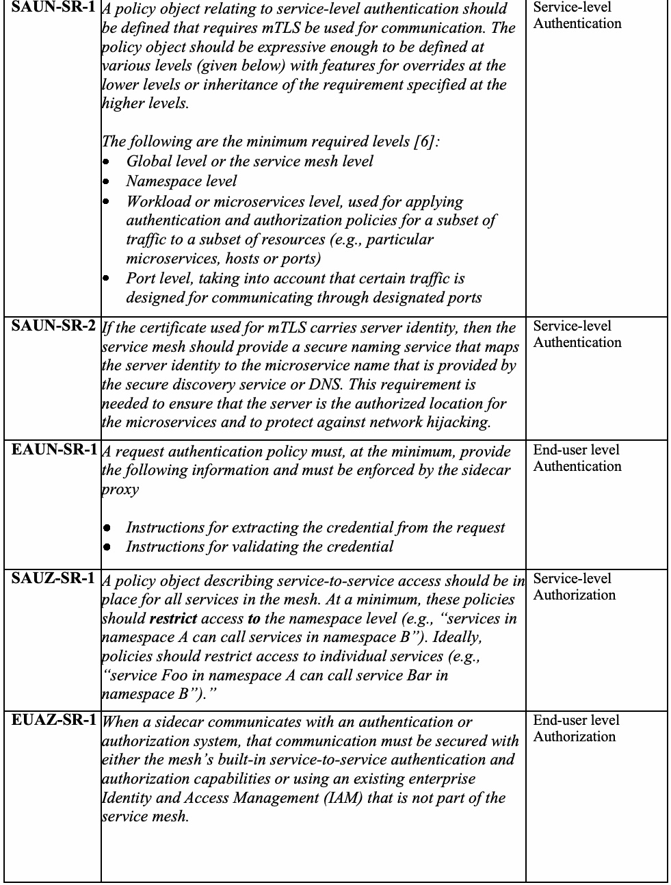
| SAUN-SR-1 | 通信にmTLSを使用することを要求する、サービスレベル認証に関するポリシーオブジェクトを定義すべきである。ポリシーオブジェクトは、下位レベルでのオーバーライド、または上位レベルで指定された要件の継承のための機能を備え、さまざまなレベル（以下に示す）で定義できるだけの十分な表現力を持つべきである。最低限必要なレベルは次のとおりである [6]： • グローバルレベルまたはサービスメッシュレベル • ネームスペースレベル • ワークロードまたはマイクロサービスレベル（リソースのサブセット（例：特定のマイクロサービス、ホスト、またはポート）に対するトラフィックのサブセットに認証および認可ポリシーを適用するために使用する） • ポートレベル（特定のトラフィックが指定されたポートを介して通信するように設計されていることを考慮する） | サービスレベル認証 |
| SAUN-SR-2 | mTLSに使用される証明書がサーバーIDを保持している場合、サービスメッシュは、そのサーバーIDを、セキュアなディスカバリサービスまたはDNSによって提供されるマイクロサービス名にマッピングするセキュアなネーミングサービスを提供すべきである。この要件は、そのサーバーが当該マイクロサービスの認可された場所であることを確実にし、ネットワークハイジャックから保護するために必要である。 | サービスレベル認証 |
| EAUN-SR-1 | リクエスト認証ポリシーは、最低限、以下の情報を提供しなければならず、かつサイドカープロキシによって強制されなければならない。 ● リクエストからクレデンシャルを抽出するための指示 ● クレデンシャルを検証するための指示 | エンドユーザーレベル認証 |
| SAUZ-SR-1 | メッシュ内のすべてのサービスについて、サービス間アクセスを記述するポリシーオブジェクトが整備されているべきである。最低限、これらのポリシーはアクセスをネームスペースレベルで制限すべきである（例：「ネームスペースAのサービスはネームスペースBのサービスを呼び出すことができる」）。理想的には、ポリシーはアクセスを個々のサービスのレベルで制限すべきである（例：「ネームスペースAのサービスFooはネームスペースBのサービスBarを呼び出すことができる」）。 | サービスレベル認可 |
| EUAZ-SR-1 | サイドカーが認証または認可システムと通信する場合、その通信は、メッシュに組み込まれたサービス間の認証および認可機能によって、またはサービスメッシュの一部ではない既存のエンタープライズのIDおよびアクセス管理（IAM）を使用して、保護されなければならない。 | エンドユーザーレベル認可 |
| EUAZ-SR-2 | The sidecar should generate logs for every service request to ensure that authentication and authorization policies are enforced and relay telemetry data for the generation of metrics to ensure no degradation of service that will impact availability. | End-user level Authorization |
| EUAZ-SR-3 | All application traffic should carry end user credentials, and there should be a policy in the mesh enforcing that credentials are present. | End-user level Authorization |
| APE-SR-1 | : The authorization policy should, at the minimum, contain the following policy elements: ● Policy types – Positive (ALLOW) or Negative (DENY) ● Policy target or authorization scope – the namespace, a particular service (application name), and version ● Policy sources – covers the set of authorized services ● Policy operations – specifies the operations on the target resources that are covered under the policy ● Policy conditions – the metadata associated with the request that must be met for the application or invocation of the policy | Authorization Policy Elements |
| APE-SR-2 | The policy should cover all of the operations that are part of the application type. For example, if the application is implemented as a REST API, all of the operations (also called HTTP verbs or HTTP methods) that are part of the REST API must be in cluded: P OST: This is equivalent to creating a resource. GET: This is equivalent to reading the contents of the resource. PUT: This is equivalent to updating the resource by replacing. PATCH: This is equivalent to updating the resource by modifying. DELETE: This is equivalent to deleting the resource. | Authorization Policy Elements |
| APE-SR-3 | A default policy should be authored in the system that rejects all requests that are unauthenticated, mandates that service and end-user credentials be present on every request, restricts all communication to services within the application’s own namespace, and allows service communication across namespaces only through an explicit policy. | Authorization Policy Elements |
原本PDFの抜粋画像
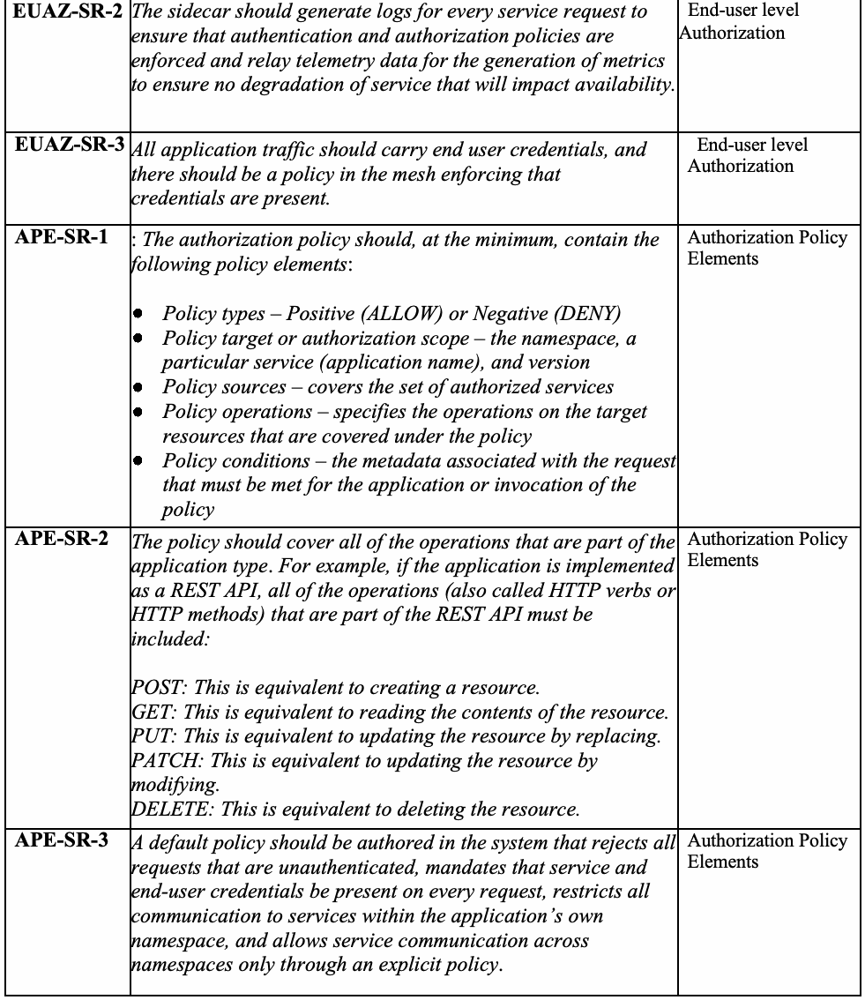
| EUAZ-SR-2 | サイドカーは、認証および認可ポリシーが強制されていることを確実にするために、すべてのサービスリクエストについてログを生成し、かつ、可用性に影響を与えるサービスの劣化がないことを確実にするために、メトリクス生成用のテレメトリデータを中継すべきである。 | エンドユーザーレベル認可 |
| EUAZ-SR-3 | すべてのアプリケーショントラフィックはエンドユーザーのクレデンシャルを伝送すべきであり、メッシュ内にはクレデンシャルが存在することを強制するポリシーがあるべきである。 | エンドユーザーレベル認可 |
| APE-SR-1 | ：認可ポリシーは、最低限、以下のポリシー要素を含むべきである。 ● ポリシータイプ – 肯定（ALLOW）または否定（DENY） ● ポリシー対象または認可スコープ – ネームスペース、特定のサービス（アプリケーション名）、およびバージョン ● ポリシー送信元 – 認可されたサービスの集合を対象とする ● ポリシー操作 – ポリシーの対象となる、ターゲットリソースに対する操作を指定する ● ポリシー条件 – ポリシーの適用または呼び出しのために満たされなければならない、リクエストに関連付けられたメタデータ | 認可ポリシー要素 |
| APE-SR-2 | ポリシーは、アプリケーションタイプの一部であるすべての操作を対象とすべきである。例えば、アプリケーションがREST APIとして実装されている場合、REST APIの一部であるすべての操作（HTTP動詞またはHTTPメソッドとも呼ばれる）が含まれなければならない。 POST：これはリソースの作成に相当する。 GET：これはリソースの内容の読み取りに相当する。 PUT：これは置換によるリソースの更新に相当する。 PATCH：これは変更によるリソースの更新に相当する。 DELETE：これはリソースの削除に相当する。 | 認可ポリシー要素 |
| APE-SR-3 | システムにはデフォルトポリシーを作成すべきであり、そのポリシーは、認証されていないすべてのリクエストを拒否し、すべてのリクエストにサービスおよびエンドユーザーのクレデンシャルが存在することを必須とし、すべての通信をアプリケーション自身のネームスペース内のサービスに制限し、ネームスペースをまたぐサービス通信は明示的なポリシーを通じてのみ許可するものとする。 | 認可ポリシー要素 |